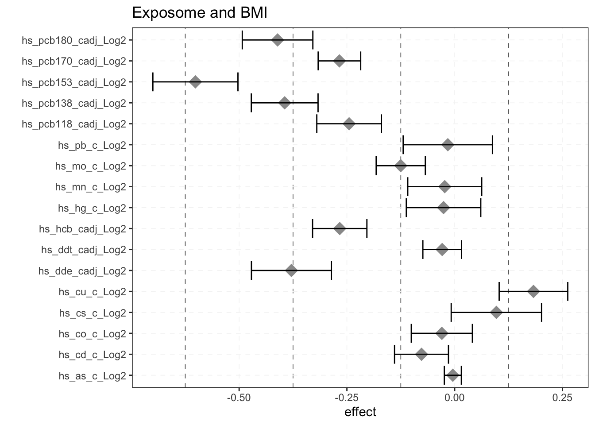
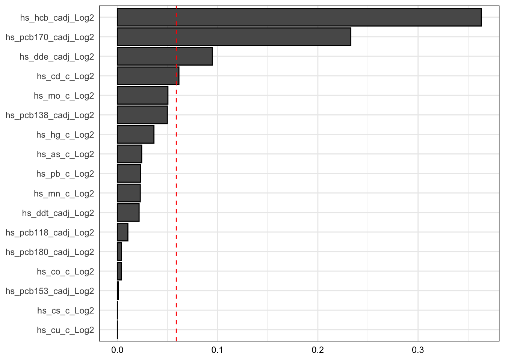

pacman::p_load(Biobase, mice, MultiDataSet, lsr, FactoMiner,
stingr, circlize, reshape2, pryr, scales, imputeLCMD,
scatterplot3d, glmnet, gridExtra, grid, Hmisc, gplot,
gtools, S4Vectors, tidyverse, corrplot, RColorBrewer,
skimr, bkmr, gWQS, ggridges, MASS, caret, partDSA)ISEE young - Workshop 1. Statistical methods for studying mixtures and the exposome

The study of mixtures and the exposome in the context of environmental epidemiological research is rapidly growing. Investigating mixtures and the exposome allows researchers to assess the independent and combined effects of various exposures, as well as their potential synergistic or antagonistic effects, on health outcomes. However, the complexity of exploring these questions requires the use of specific statistical models to account for aspects that single-exposure models cannot typically handle (e.g. multicollinearity).
This workshop therefore aims at summarizing and presenting the main models used for studying mixtures and the exposome, and discussing the pros and cons of each method in relation to a specific study objectives.
To install the packaged required for the practical session please follow the steps below:
For this hands-on session we will use data from the HELIX exposome study. The HELIX study is a collaborative project between six population-based longitudinal birth cohort studies from six European countries (France, Greece, Lithuania, Norway, Spain and the United Kingdom).

Note: The data provided in this introductory course were simulated using data from the HELIX subcohort. Details of the HELIX project and the origin of the data collected can be consulted in the following publication: https://bmjopen.bmj.com/content/8/9/e021311 and website: https://www.projecthelix.eu/es.
- The exposome data (n = 1301) that we will use is contained in an Rdata file, the file contains the following files:
phenotype(outcomes)exposomecovariates(covariates)
The exposome database contains more than 200 exposures. 
The description of each variable (name, structure, variable type, transformation, …) is detailed in the codebook.
- This RData file contains (phenotype, exposure, covariates and codebook)
load(url("https://raw.githubusercontent.com/alldominguez/isee_young_rennes_ws1/main/data/exposome.RData"))We will check the different options
dplyr::glimpse(phenotype) Rows: 1,301
Columns: 7
$ ID <int> 1, 2, 3, 4, 5, 6, 7, 8, 9, 10, 11, 12, 13, 14, 15, 16…
$ e3_bw <int> 4100, 4158, 4110, 3270, 3950, 2900, 3350, 3580, 3000,…
$ hs_asthma <dbl> 0, 0, 1, 0, 0, 1, 0, 1, 0, 1, 0, 0, 0, 0, 1, 0, 0, 0,…
$ hs_zbmi_who <dbl> 0.30, 0.41, 3.33, -0.76, 0.98, -0.08, 0.04, -0.10, -1…
$ hs_correct_raven <int> 18, 25, 13, 28, 19, 19, 34, 16, 35, 32, 18, 24, 30, 3…
$ hs_Gen_Tot <dbl> 84.0000, 39.0000, 40.0000, 54.5000, 18.0000, 4.0000, …
$ hs_bmi_c_cat <fct> 2, 2, 4, 2, 2, 2, 2, 2, 2, 3, 4, 4, 2, 2, 4, 3, 2, 2,…dplyr::glimpse(exposome) Rows: 1,301
Columns: 223
$ ID <int> 1, 2, 3, 4, 5, 6, 7, 8, 9, 10, 11, 12, 13…
$ h_abs_ratio_preg_Log <dbl> 0.89671105, 0.89253797, 0.77872299, 0.089…
$ h_no2_ratio_preg_Log <dbl> 2.872304, 2.980008, 3.056501, 3.089157, 3…
$ h_pm10_ratio_preg_None <dbl> 25.94850, 25.89774, 26.08735, 14.99138, 3…
$ h_pm25_ratio_preg_None <dbl> 17.433798, 18.470850, 18.711547, 16.40977…
$ hs_no2_dy_hs_h_Log <dbl> 2.530279, 1.928600, 2.882591, 1.390750, 3…
$ hs_no2_wk_hs_h_Log <dbl> 2.583284, 2.652479, 2.591756, 2.456717, 3…
$ hs_no2_yr_hs_h_Log <dbl> 2.612098, 2.761064, 2.356163, 2.403247, 3…
$ hs_pm10_dy_hs_h_None <dbl> 22.53583, 14.07776, 46.85910, 29.81744, 2…
$ hs_pm10_wk_hs_h_None <dbl> 20.850005, 29.141274, 31.530981, 25.23277…
$ hs_pm10_yr_hs_h_None <dbl> 31.39907, 31.25053, 27.51600, 23.96526, 2…
$ hs_pm25_dy_hs_h_None <dbl> 16.950474, 11.155481, 28.454911, 4.624601…
$ hs_pm25_wk_hs_h_None <dbl> 17.001157, 15.910697, 21.274005, 10.96794…
$ hs_pm25_yr_hs_h_None <dbl> 18.395672, 17.735640, 16.808644, 12.72905…
$ hs_pm25abs_dy_hs_h_Log <dbl> 0.09739716, -0.43039392, 0.91559425, -0.2…
$ hs_pm25abs_wk_hs_h_Log <dbl> 0.07115366, 0.21428919, 0.71974438, -0.13…
$ hs_pm25abs_yr_hs_h_Log <dbl> 0.32106365, 0.28149354, 0.09872019, 0.177…
$ h_accesslines300_preg_dic0 <dbl> 0, 0, 0, 1, 1, 0, 0, 0, 0, 0, 0, 1, 0, 0,…
$ h_accesspoints300_preg_Log <dbl> 1.962937, 2.368356, 1.269931, 4.527757, 3…
$ h_builtdens300_preg_Sqrt <dbl> 405.12310, 310.82760, 374.61057, 565.0784…
$ h_connind300_preg_Sqrt <dbl> 1.886691, 6.535691, 6.257448, 14.491952, …
$ h_fdensity300_preg_Log <dbl> 10.26284, 10.26284, 10.26284, 13.84635, 1…
$ h_frichness300_preg_None <dbl> 0.00000000, 0.00000000, 0.00000000, 0.245…
$ h_landuseshan300_preg_None <dbl> 0.3638871, 0.4007151, 0.2881437, 0.632757…
$ h_popdens_preg_Sqrt <dbl> 84.988234, 84.988234, 84.988234, 66.53570…
$ h_walkability_mean_preg_None <dbl> 0.175, 0.200, 0.150, 0.350, 0.275, 0.350,…
$ hs_accesslines300_h_dic0 <dbl> 0, 0, 0, 1, 1, 0, 0, 0, 0, 0, 0, 1, 0, 0,…
$ hs_accesspoints300_h_Log <dbl> 1.6753021, 2.7737896, 0.5770643, 4.583846…
$ hs_builtdens300_h_Sqrt <dbl> 406.51919, 382.52734, 374.66924, 479.9022…
$ hs_connind300_h_Log <dbl> 4.565486, 3.754556, 2.879087, 5.474342, 4…
$ hs_fdensity300_h_Log <dbl> 10.26284, 10.26284, 10.26284, 13.97641, 1…
$ hs_landuseshan300_h_None <dbl> 0.3535060, 0.3205542, 0.4792989, 0.454445…
$ hs_popdens_h_Sqrt <dbl> 84.988234, 10.246951, 10.246951, 66.53570…
$ hs_walkability_mean_h_None <dbl> 0.375, 0.200, 0.250, 0.525, 0.300, 0.375,…
$ hs_accesslines300_s_dic0 <dbl> 0, 0, 0, 1, 0, 0, 0, 0, 0, 0, 0, 1, 0, 0,…
$ hs_accesspoints300_s_Log <dbl> 0.5770643, 2.1860528, 2.1860528, 3.284590…
$ hs_builtdens300_s_Sqrt <dbl> 384.99302, 383.64898, 366.41259, 406.2726…
$ hs_connind300_s_Log <dbl> 2.368262, 3.466874, 3.977700, 5.651676, 4…
$ hs_fdensity300_s_Log <dbl> 10.26284, 10.26284, 10.26284, 12.34228, 1…
$ hs_landuseshan300_s_None <dbl> 0.2800504, 0.3682542, 0.3252277, 0.520970…
$ hs_popdens_s_Sqrt <dbl> 84.988234, 84.988234, 84.988234, 25.71451…
$ h_Absorbance_Log <dbl> -0.135119353, -0.057699576, -0.437228805,…
$ h_Benzene_Log <dbl> 0.57215704, 0.87975097, 1.37913427, 1.168…
$ h_NO2_Log <dbl> 4.576481, 3.368754, 4.297368, 2.504501, 6…
$ h_PM_Log <dbl> 2.604548, 2.328879, 2.327120, 1.657071, 3…
$ h_TEX_Log <dbl> 2.529664, 2.841000, 2.884071, 2.668584, 3…
$ e3_alcpreg_yn_None <fct> 0, 0, 0, 0, 0, 0, 0, 1, 0, 0, 0, 0, 0, 1,…
$ h_bfdur_Ter <fct> "(0,10.8]", "(0,10.8]", "(34.9,Inf]", "(1…
$ h_cereal_preg_Ter <fct> "(0,9]", "(0,9]", "(9,27.3]", "(27.3,Inf]…
$ h_dairy_preg_Ter <fct> "(27.1,Inf]", "(27.1,Inf]", "(27.1,Inf]",…
$ h_fastfood_preg_Ter <fct> "(0.25,0.83]", "(0.83,Inf]", "(0.83,Inf]"…
$ h_fish_preg_Ter <fct> "(4.1,Inf]", "(4.1,Inf]", "(4.1,Inf]", "(…
$ h_folic_t1_None <fct> 0, 0, 1, 0, 0, 0, 0, 0, 0, 1, 1, 1, 1, 0,…
$ h_fruit_preg_Ter <fct> "(0.6,18.2]", "(0.6,18.2]", "(0.6,18.2]",…
$ h_legume_preg_Ter <fct> "(2,Inf]", "(2,Inf]", "(2,Inf]", "(2,Inf]…
$ h_meat_preg_Ter <fct> "(6.5,10]", "(10,Inf]", "(6.5,10]", "(10,…
$ h_pamod_t3_None <fct> Very Often, None, Often, Often, Very Ofte…
$ h_pavig_t3_None <fct> Low, Low, Low, Medium, Medium, Medium, Lo…
$ h_veg_preg_Ter <fct> "(8.8,16.5]", "(8.8,16.5]", "(8.8,16.5]",…
$ hs_bakery_prod_Ter <fct> "(2,6]", "(0,2]", "(2,6]", "(6,Inf]", "(2…
$ hs_beverages_Ter <fct> "(1,Inf]", "(0.132,1]", "(0.132,1]", "(0,…
$ hs_break_cer_Ter <fct> "(0,1.1]", "(0,1.1]", "(1.1,5.5]", "(5.5,…
$ hs_caff_drink_Ter <fct> "(0,0.132]", "(0.132,Inf]", "(0.132,Inf]"…
$ hs_dairy_Ter <fct> "(0,14.6]", "(0,14.6]", "(0,14.6]", "(25.…
$ hs_fastfood_Ter <fct> "(0.132,0.5]", "(0.132,0.5]", "(0.132,0.5…
$ hs_KIDMED_None <dbl> 2, 0, 1, 2, 4, 5, 2, 3, 3, 3, 3, 8, 2, 1,…
$ hs_mvpa_prd_alt_None <dbl> 47.892043, 31.831901, 117.576830, -2.0334…
$ hs_org_food_Ter <fct> "(0.132,1]", "(1,Inf]", "(0.132,1]", "(0.…
$ hs_pet_cat_r2_None <fct> 0, 0, 0, 1, 0, 0, 1, 0, 0, 1, 0, 1, 0, 0,…
$ hs_pet_dog_r2_None <fct> 0, 0, 0, 0, 1, 0, 0, 0, 0, 0, 0, 0, 1, 0,…
$ hs_pet_None <fct> Yes, No, No, Yes, Yes, Yes, Yes, No, Yes,…
$ hs_proc_meat_Ter <fct> "(1.5,4]", "(1.5,4]", "(4,Inf]", "(0,1.5]…
$ hs_readymade_Ter <fct> "(0,0.132]", "(0.5,Inf]", "(0.5,Inf]", "(…
$ hs_sd_wk_None <dbl> 388.57143, 522.85714, 445.71429, 180.0000…
$ hs_total_bread_Ter <fct> "(0,7]", "(17.5,Inf]", "(0,7]", "(17.5,In…
$ hs_total_cereal_Ter <fct> "(0,14.1]", "(14.1,23.6]", "(14.1,23.6]",…
$ hs_total_fish_Ter <fct> "(0,1.5]", "(0,1.5]", "(0,1.5]", "(1.5,3]…
$ hs_total_fruits_Ter <fct> "(14.1,Inf]", "(0,7]", "(0,7]", "(14.1,In…
$ hs_total_lipids_Ter <fct> "(7,Inf]", "(7,Inf]", "(7,Inf]", "(3,7]",…
$ hs_total_meat_Ter <fct> "(6,9]", "(0,6]", "(9,Inf]", "(0,6]", "(6…
$ hs_total_potatoes_Ter <fct> "(4,Inf]", "(3,4]", "(3,4]", "(0,3]", "(0…
$ hs_total_sweets_Ter <fct> "(0,4.1]", "(8.5,Inf]", "(8.5,Inf]", "(8.…
$ hs_total_veg_Ter <fct> "(8.5,Inf]", "(6,8.5]", "(8.5,Inf]", "(8.…
$ hs_total_yog_Ter <fct> "(0,6]", "(0,6]", "(0,6]", "(8.5,Inf]", "…
$ hs_dif_hours_total_None <dbl> 9.461109, 9.596343, 9.970835, 10.085262, …
$ hs_as_c_Log2 <dbl> -4.28280856, -6.43028014, -7.97829150, 0.…
$ hs_as_m_Log2 <dbl> -19.49712481, -9.58263737, -14.91793276, …
$ hs_cd_c_Log2 <dbl> -4.140507, -4.254289, -4.051698, -5.25904…
$ hs_cd_m_Log2 <dbl> -3.0709665, -2.5994621, -2.9657843, -0.93…
$ hs_co_c_Log2 <dbl> 1.021480, -2.617056, -2.556393, -3.000000…
$ hs_co_m_Log2 <dbl> -4.0831412, -2.4111954, -2.6259343, -2.80…
$ hs_cs_c_Log2 <dbl> 0.2509616, 0.2016339, 0.3895668, 0.669026…
$ hs_cs_m_Log2 <dbl> 0.1505597, -0.2722973, 0.5360529, 0.71369…
$ hs_cu_c_Log2 <dbl> 9.710806, 9.943980, 9.929258, 10.192293, …
$ hs_cu_m_Log2 <dbl> 10.216746, 10.511753, 10.264443, 10.09011…
$ hs_hg_c_Log2 <dbl> -2.152003093, -1.300448367, -0.910501849,…
$ hs_hg_m_Log2 <dbl> -3.12029423, -1.02326978, 0.08406426, 2.2…
$ hs_mn_c_Log2 <dbl> 3.459432, 2.881665, 2.998196, 3.215679, 2…
$ hs_mn_m_Log2 <dbl> 3.608809, 4.161888, 2.877744, 3.249445, 3…
$ hs_mo_c_Log2 <dbl> 0.9486008, 1.0703893, -0.4839849, -5.8657…
$ hs_mo_m_Log2 <dbl> -1.81096618, -2.41888982, -0.26534457, -0…
$ hs_pb_c_Log2 <dbl> 3.632268, 3.405992, 2.815575, 3.168321, 3…
$ hs_pb_m_Log2 <dbl> 2.604071, 3.817623, 3.158660, 2.575312, 3…
$ hs_tl_cdich_None <fct> Undetected, Undetected, Undetected, Undet…
$ hs_tl_mdich_None <fct> Undetected, Undetected, Undetected, Undet…
$ h_humidity_preg_None <dbl> 89.91606, 82.19326, 86.88924, 77.91288, 7…
$ h_pressure_preg_None <dbl> 981.4244, 982.8623, 980.8294, 1002.9952, …
$ h_temperature_preg_None <dbl> 6.659455, 9.995885, 9.986814, 13.834848, …
$ hs_hum_mt_hs_h_None <dbl> 79.29731, 85.55336, 81.89890, 81.72799, 5…
$ hs_tm_mt_hs_h_None <dbl> 14.273439, 11.233588, 16.092377, 3.704591…
$ hs_uvdvf_mt_hs_h_None <dbl> 0.13833333, 1.91900000, 1.66500000, 0.274…
$ hs_hum_dy_hs_h_None <dbl> 54.44336, 70.39935, 77.63110, 47.68000, 5…
$ hs_hum_wk_hs_h_None <dbl> 85.44951, 92.17720, 81.44176, 82.42149, 6…
$ hs_tm_dy_hs_h_None <dbl> 17.1106000, 4.8696000, 16.8812000, 7.6062…
$ hs_tm_wk_hs_h_None <dbl> 13.100794, 12.814309, 12.361921, 5.213848…
$ hs_uvdvf_dy_hs_h_None <dbl> 2.60, 0.38, 1.59, 0.48, 2.89, 0.19, 0.44,…
$ hs_uvdvf_wk_hs_h_None <dbl> 2.6871429, 0.4542857, 1.5828571, 0.437142…
$ hs_blueyn300_s_None <fct> 0, 0, 0, 0, 0, 0, 0, 0, 0, 0, 0, 0, 0, 0,…
$ h_blueyn300_preg_None <fct> 0, 0, 0, 0, 0, 0, 0, 0, 0, 0, 0, 0, 0, 0,…
$ h_greenyn300_preg_None <fct> 1, 1, 1, 1, 1, 1, 1, 1, 1, 0, 0, 1, 1, 1,…
$ h_ndvi100_preg_None <dbl> 0.4470029, 0.4812514, 0.4571000, 0.287485…
$ hs_greenyn300_s_None <fct> 1, 1, 1, 1, 1, 1, 1, 1, 0, 1, 1, 0, 1, 1,…
$ hs_blueyn300_h_None <fct> 0, 0, 0, 0, 0, 0, 0, 0, 0, 0, 0, 0, 0, 0,…
$ hs_greenyn300_h_None <fct> 1, 1, 1, 1, 1, 1, 0, 1, 1, 0, 1, 1, 1, 1,…
$ hs_ndvi100_h_None <dbl> 0.4653917, 0.5239703, 0.5486595, 0.361057…
$ hs_ndvi100_s_None <dbl> 0.4712486, 0.5292686, 0.5351938, 0.383908…
$ h_lden_cat_preg_None <dbl> 39.75385, 49.16870, 53.22450, 65.07300, 5…
$ hs_ln_cat_h_None <fct> 2, 2, 1, 1, 1, 1, 1, 1, 2, 1, 1, 2, 2, 2,…
$ hs_lden_cat_s_None <fct> 1, 1, 1, 1, 4, 2, 1, 3, 3, 1, 1, 3, 4, 1,…
$ hs_dde_cadj_Log2 <dbl> 6.931470, 4.603694, 5.959344, 4.491256, 3…
$ hs_dde_madj_Log2 <dbl> 4.638426, 3.503177, 10.893742, 6.232923, …
$ hs_ddt_cadj_Log2 <dbl> 0.2970882, 0.7680593, 1.4533812, 1.525552…
$ hs_ddt_madj_Log2 <dbl> 0.2577006, 0.2577006, 6.5565927, 1.964627…
$ hs_hcb_cadj_Log2 <dbl> 3.928449, 3.769760, 4.818599, 3.300304, 2…
$ hs_hcb_madj_Log2 <dbl> 1.824003, 2.564390, 2.592053, 3.325764, 2…
$ hs_pcb118_cadj_Log2 <dbl> 1.2977475, 1.2748129, 1.6622520, 1.371607…
$ hs_pcb118_madj_Log2 <dbl> 1.0521823, 0.6562714, 1.1287777, 2.978092…
$ hs_pcb138_cadj_Log2 <dbl> 2.3525572, 2.3322423, 2.6611151, 3.784582…
$ hs_pcb138_madj_Log2 <dbl> 2.4940391, 2.4940391, 1.7636204, 4.992548…
$ hs_pcb153_cadj_Log2 <dbl> 3.248377, 3.821372, 3.945067, 4.749490, 2…
$ hs_pcb153_madj_Log2 <dbl> 2.852110, 2.582639, 2.852110, 5.831959, 3…
$ hs_pcb170_cadj_Log2 <dbl> 0.08207138, -0.52036182, 0.65733132, 1.02…
$ hs_pcb170_madj_Log2 <dbl> -1.2372802, -1.2372802, -0.3211039, 3.896…
$ hs_pcb180_cadj_Log2 <dbl> 1.4080790, 0.6983198, 2.2941031, 3.340395…
$ hs_pcb180_madj_Log2 <dbl> 2.4272315, 2.4272315, 1.3746028, 5.211053…
$ hs_sumPCBs5_cadj_Log2 <dbl> 4.377198, 4.537206, 5.059411, 5.919856, 3…
$ hs_sumPCBs5_madj_Log2 <dbl> 3.203309, 4.007477, 4.152160, 7.211848, 3…
$ hs_dep_cadj_Log2 <dbl> 1.74476672, 0.27498549, -0.27461127, -10.…
$ hs_dep_madj_Log2 <dbl> 3.0912536, 1.5457521, 1.5457521, 5.080127…
$ hs_detp_cadj_Log2 <dbl> 2.6944684, -6.8184598, -0.5384437, -6.311…
$ hs_detp_madj_Log2 <dbl> 3.2161570, 1.0078850, 1.0078850, -3.69631…
$ hs_dmdtp_cdich_None <fct> Undetected, Undetected, Detected, Undetec…
$ hs_dmp_cadj_Log2 <dbl> -4.0318622, -6.4363044, -8.9539158, -5.08…
$ hs_dmp_madj_Log2 <dbl> 2.9433574, 2.1942911, 2.9433574, 3.293906…
$ hs_dmtp_cadj_Log2 <dbl> 0.8459927, 1.9233638, 3.0682471, -5.10521…
$ hs_dmtp_madj_Log2 <dbl> 4.10736093, 1.20021121, 4.10736093, 3.576…
$ hs_pbde153_cadj_Log2 <dbl> -7.8475381, -1.2116525, -7.2844585, -9.32…
$ hs_pbde153_madj_Log2 <dbl> -0.03209840, -0.72344958, -0.72344958, -1…
$ hs_pbde47_cadj_Log2 <dbl> -8.9728400, -2.4243205, -2.5066911, -3.44…
$ hs_pbde47_madj_Log2 <dbl> -1.4042180, -0.2313590, -1.8333971, -0.43…
$ hs_pfhxs_c_Log2 <dbl> -2.73320634, -3.48387601, -2.24840988, 1.…
$ hs_pfhxs_m_Log2 <dbl> -0.687707983, -1.549184532, -1.082757875,…
$ hs_pfna_c_Log2 <dbl> -2.48372269, -0.97229214, -0.10643005, -0…
$ hs_pfna_m_Log2 <dbl> -1.1584929, -0.9823236, -0.1497498, 0.362…
$ hs_pfoa_c_Log2 <dbl> -0.05315422, 0.62745590, 0.83831144, 1.07…
$ hs_pfoa_m_Log2 <dbl> -0.3632912, -2.2728850, 0.4106915, 2.2795…
$ hs_pfos_c_Log2 <dbl> -0.38337839, -0.04316422, 0.55768510, 3.0…
$ hs_pfos_m_Log2 <dbl> 0.2179881, 2.1738486, 2.3952115, 4.019819…
$ hs_pfunda_c_Log2 <dbl> -4.000194, -5.178933, -5.577692, -2.24362…
$ hs_pfunda_m_Log2 <dbl> -3.2250079, -2.4030518, -0.7264510, -2.91…
$ hs_bpa_cadj_Log2 <dbl> 2.4772244, 2.3889213, 2.1961708, 2.244282…
$ hs_bpa_madj_Log2 <dbl> 0.05551944, 0.29199592, 1.06476036, 2.094…
$ hs_bupa_cadj_Log2 <dbl> -1.9910343, -1.9327542, -3.9561076, -5.73…
$ hs_bupa_madj_Log2 <dbl> 1.7825148, 1.7825148, -2.2540446, -1.7875…
$ hs_etpa_cadj_Log2 <dbl> 0.25162413, 0.52518659, -1.46796280, -0.7…
$ hs_etpa_madj_Log2 <dbl> 5.79901555, 3.28026401, 5.37589705, -1.32…
$ hs_mepa_cadj_Log2 <dbl> 3.3022934, 1.8018050, 2.5656644, 6.542008…
$ hs_mepa_madj_Log2 <dbl> 8.1331356, 9.2005475, 8.1331356, 1.785878…
$ hs_oxbe_cadj_Log2 <dbl> -0.30053896, -1.55772770, -0.43999936, -2…
$ hs_oxbe_madj_Log2 <dbl> 6.7364323, 0.6546953, 1.8318678, 2.754110…
$ hs_prpa_cadj_Log2 <dbl> -4.92777202, -0.01703175, -5.70004580, -1…
$ hs_prpa_madj_Log2 <dbl> 7.0527639, 6.3297033, 6.7250904, 2.941532…
$ hs_trcs_cadj_Log2 <dbl> -0.265468775, -1.860420545, -1.400197798,…
$ hs_trcs_madj_Log2 <dbl> 8.01825911, -0.17483361, -0.17483361, 4.6…
$ hs_mbzp_cadj_Log2 <dbl> 3.3532699, 5.6637287, 3.3272966, 0.695401…
$ hs_mbzp_madj_Log2 <dbl> 3.24276315, 1.86067981, 4.77905012, 3.034…
$ hs_mecpp_cadj_Log2 <dbl> 6.815175, 4.950059, 5.009923, 4.338707, 5…
$ hs_mecpp_madj_Log2 <dbl> 5.874621, 4.741951, 4.850658, 6.346643, 5…
$ hs_mehhp_cadj_Log2 <dbl> 5.043494, 4.857453, 4.227012, 2.879596, 4…
$ hs_mehhp_madj_Log2 <dbl> 4.012001, 4.391042, 4.067675, 5.608232, 3…
$ hs_mehp_cadj_Log2 <dbl> 1.0129893, 1.6884226, 1.0204371, 0.486090…
$ hs_mehp_madj_Log2 <dbl> 3.5077481, 1.7013323, 1.7469755, 2.453339…
$ hs_meohp_cadj_Log2 <dbl> 4.992377, 4.549745, 3.473975, 2.653729, 3…
$ hs_meohp_madj_Log2 <dbl> 3.649581, 4.360200, 3.532362, 4.700827, 2…
$ hs_mep_cadj_Log2 <dbl> 4.168832, 6.025384, 3.861531, 3.575644, 8…
$ hs_mep_madj_Log2 <dbl> 7.123924, 8.910995, 8.400838, 5.821934, 1…
$ hs_mibp_cadj_Log2 <dbl> 6.782071, 6.195669, 6.154459, 5.426139, 5…
$ hs_mibp_madj_Log2 <dbl> 4.433047, 6.083043, 4.976039, 5.626695, 4…
$ hs_mnbp_cadj_Log2 <dbl> 6.960653, 5.755960, 4.464226, 5.616907, 5…
$ hs_mnbp_madj_Log2 <dbl> 4.788463, 3.839804, 4.788463, 4.842579, 4…
$ hs_ohminp_cadj_Log2 <dbl> 3.8445765, 2.0643701, 2.6980526, 1.075322…
$ hs_ohminp_madj_Log2 <dbl> 0.02350192, -0.90016327, -0.56501743, 0.6…
$ hs_oxominp_cadj_Log2 <dbl> 2.08084891, 0.49145227, 1.39715783, 1.535…
$ hs_oxominp_madj_Log2 <dbl> -0.6964288, -0.6939739, -0.6964288, 3.774…
$ hs_sumDEHP_cadj_Log2 <dbl> 5.923815, 7.401802, 5.810282, 5.358708, 6…
$ hs_sumDEHP_madj_Log2 <dbl> 5.805357, 5.805357, 5.774054, 7.227603, 4…
$ FAS_cat_None <fct> Middle, Middle, Middle, High, Low, Middle…
$ hs_contactfam_3cat_num_None <fct> Once a week, (almost) Daily, Once a week,…
$ hs_hm_pers_None <dbl> 3, 4, 4, 3, 4, 4, 4, 3, 4, 5, 5, 4, 3, 4,…
$ hs_participation_3cat_None <fct> 1 organisation, 1 organisation, None, Non…
$ e3_asmokcigd_p_None <dbl> 0, 0, 0, 0, 0, 0, 0, 0, 0, 0, 0, 0, 0, 0,…
$ hs_cotinine_cdich_None <fct> Undetected, Undetected, Undetected, Undet…
$ hs_cotinine_mcat_None <fct> Smokers, Smokers, Smokers, Non-smokers, N…
$ hs_globalexp2_None <fct> exposure, no exposure, no exposure, expos…
$ hs_smk_parents_None <fct> both, neither, one, one, neither, neither…
$ h_distinvnear1_preg_Log <dbl> -5.629052, -5.045588, -4.204225, -3.08801…
$ h_trafload_preg_pow1over3 <dbl> 0.3458301, 0.3458301, 145.5727586, 187.12…
$ h_trafnear_preg_pow1over3 <dbl> 21.213987, 22.649684, 25.549436, 22.74385…
$ hs_trafload_h_pow1over3 <dbl> 135.99576, 97.88442, 127.53614, 114.86848…
$ hs_trafnear_h_pow1over3 <dbl> 24.914911, 27.905292, 29.299706, 22.74385…
$ h_bro_preg_Log <dbl> -2.9759296, -2.9759296, -1.6044503, 2.748…
$ h_clf_preg_Log <dbl> -0.5367134, 1.0787497, 1.1887577, 3.63681…
$ h_thm_preg_Log <dbl> 0.2880726, 3.1954784, 3.0239239, 3.839335…dplyr::glimpse(covariates)Rows: 1,301
Columns: 14
$ ID <int> 1, 2, 3, 4, 5, 6, 7, 8, 9, 10, 11, 12, 13, 14, 15, 1…
$ h_cohort <fct> 4, 4, 4, 2, 3, 1, 2, 1, 2, 1, 1, 3, 2, 2, 4, 4, 4, 4…
$ e3_sex_None <fct> male, male, male, female, male, female, male, female…
$ e3_yearbir_None <fct> 2008, 2007, 2008, 2005, 2005, 2007, 2003, 2008, 2004…
$ h_mbmi_None <dbl> 25.51020, 26.49151, 30.11621, 21.04805, 22.15102, 24…
$ hs_wgtgain_None <dbl> 17, 18, 11, 21, 20, 30, 20, 20, 12, 9, 10, 18, 5, 20…
$ e3_gac_None <dbl> 41.00000, 41.00000, 39.00000, 39.28571, 43.00000, 38…
$ h_age_None <dbl> 28.00000, 22.84155, 34.23242, 32.72553, 20.86516, 27…
$ h_edumc_None <fct> 2, 3, 3, 1, 1, 3, 1, 2, 2, 1, 3, 3, 3, 2, 2, 3, 3, 2…
$ h_native_None <fct> 2, 2, 2, 2, 2, 2, 2, 0, 2, 1, 0, 2, 2, 2, 2, 2, 2, 2…
$ h_parity_None <fct> 0, 1, 1, 1, 0, 0, 2, 0, 1, 2, 1, 1, 1, 0, 0, 2, 1, 1…
$ hs_child_age_None <dbl> 6.165640, 6.992471, 6.110883, 10.138261, 9.451175, 6…
$ hs_c_height_None <dbl> 1.220, 1.220, 1.280, 1.345, 1.370, 1.130, 1.315, 1.2…
$ hs_c_weight_None <dbl> 23.4, 27.6, 37.5, 27.7, 34.0, 21.5, 29.8, 22.5, 24.3…dplyr::glimpse(codebook)Rows: 241
Columns: 12
$ variable_name <fct> h_abs_ratio_preg_Log, h_no2_ratio_preg_Log, h_pm10_ra…
$ domain <fct> Outdoor exposures, Outdoor exposures, Outdoor exposur…
$ family <fct> Air Pollution, Air Pollution, Air Pollution, Air Poll…
$ subfamily <fct> PMAbsorbance, NO2, PM10, PM2.5, NO2, NO2, NO2, PM10, …
$ period <fct> Pregnancy, Pregnancy, Pregnancy, Pregnancy, Postnatal…
$ location <fct> Home, Home, Home, Home, Home, Home, Home, Home, Home,…
$ period_postnatal <fct> NA, NA, NA, NA, Day before examination, Week before e…
$ description <fct> "abs value (extrapolated back in time using ratio met…
$ var_type <fct> numeric, numeric, numeric, numeric, numeric, numeric,…
$ transformation <fct> Natural Logarithm, Natural Logarithm, None, None, Nat…
$ labels <fct> PMabs, NO2, PM10, PM2.5, NO2(day), NO2(week), NO2(yea…
$ labelsshort <fct> PMabs, NO2, PM10, PM2.5, NO2(day), NO2(week), NO2(yea…We are going to use the rexposome::loadExposome function to create a single dataset (ExposomeSet) through the data.frames that we initially loaded. First we will organize the data in the appropriate format for our analysis.
# Time windows of exposure availables for the analysis
levels(codebook$period)[1] "Postnatal" "Pregnancy"# Exposure families availables for the analysis
levels(codebook$family) [1] "Air Pollution"
[2] "Built environment"
[3] "Covariates"
[4] "Indoor air"
[5] "Lifestyle"
[6] "Metals"
[7] "Meteorological"
[8] "Natural Spaces"
[9] "Noise"
[10] "Organochlorines"
[11] "Organophosphate pesticides"
[12] "Per- and polyfluoroalkyl substances (PFAS)"
[13] "Phenols"
[14] "Phenotype"
[15] "Phthalates"
[16] "Polybrominated diphenyl ethers (PBDE)"
[17] "Social and economic capital"
[18] "Tobacco Smoke"
[19] "Traffic"
[20] "Water DBPs" - Processing data for the Exposome analysis
expo.list <- as.character(codebook$variable_name[(codebook$family == "Organochlorines" |
codebook$family == "Metals") &
codebook$period == "Postnatal"]) # we can also select "Pregnancy" period
expo.list [1] "hs_as_c_Log2" "hs_cd_c_Log2" "hs_co_c_Log2"
[4] "hs_cs_c_Log2" "hs_cu_c_Log2" "hs_hg_c_Log2"
[7] "hs_mn_c_Log2" "hs_mo_c_Log2" "hs_pb_c_Log2"
[10] "hs_tl_cdich_None" "hs_dde_cadj_Log2" "hs_ddt_cadj_Log2"
[13] "hs_hcb_cadj_Log2" "hs_pcb118_cadj_Log2" "hs_pcb138_cadj_Log2"
[16] "hs_pcb153_cadj_Log2" "hs_pcb170_cadj_Log2" "hs_pcb180_cadj_Log2"
[19] "hs_sumPCBs5_cadj_Log2"We can exclude unnecessary information
expo.list <- expo.list[-which(expo.list == "hs_tl_cdich_None")]
expo.list <- expo.list[-which(expo.list == "hs_sumPCBs5_cadj_Log2")]Select specific columns (variables) from the families that we selected in the previous step and add the identifier per subject (ID)
expo2 <- exposome[ ,c("ID", expo.list)]Now we scale the continuous variables
index.cont <- c(3:9,11:ncol(expo2))
for (i in index.cont) {
expo2[,i] <- expo2[,i]/IQR(expo2[,i],na.rm=T)
}codebook[expo.list,]$labels [1] As Cd Co Cs Cu Hg Mn Mo Pb
[10] DDE DDT HCB PCB 118 PCB 138 PCB 153 PCB 170 PCB 180
178 Levels: Access_ lines Access_ lines_home ... Yogurt- We combine data from the
phenotypeandcovariatesfiles
dat <- cbind(hs_zbmi_who = phenotype[ ,4], # we select the 4th column of the phenotype dataframe and call it hs_zbmi_who
covariates[ ,2:13]) # we select from columns 2 to 13 of the covariates dataframe
data <- data.frame(expo2, dat)dplyr::glimpse(data)Rows: 1,301
Columns: 31
$ ID <int> 1, 2, 3, 4, 5, 6, 7, 8, 9, 10, 11, 12, 13, 14, 15,…
$ hs_as_c_Log2 <dbl> -4.28280856, -6.43028014, -7.97829150, 0.63226822,…
$ hs_cd_c_Log2 <dbl> -4.115508, -4.228603, -4.027235, -5.227292, -3.729…
$ hs_co_c_Log2 <dbl> 1.509089, -3.866323, -3.776703, -4.432068, -2.3824…
$ hs_cs_c_Log2 <dbl> 0.3342716, 0.2685689, 0.5188887, 0.8911191, 1.2028…
$ hs_cu_c_Log2 <dbl> 34.12738, 34.94684, 34.89511, 35.81951, 33.16411, …
$ hs_hg_c_Log2 <dbl> -1.049020025, -0.633919339, -0.443835176, 0.721573…
$ hs_mn_c_Log2 <dbl> 6.217601, 5.179186, 5.388626, 5.779506, 5.175665, …
$ hs_mo_c_Log2 <dbl> 1.2010916, 1.3552967, -0.6128079, -7.4270093, -0.3…
$ hs_pb_c_Log2 <dbl> 3.632268, 3.405992, 2.815575, 3.168321, 3.632268, …
$ hs_dde_cadj_Log2 <dbl> 3.561138, 2.365211, 3.061695, 2.307444, 1.988201, …
$ hs_ddt_cadj_Log2 <dbl> 0.11790564, 0.30482029, 0.57680451, 0.60544700, -0…
$ hs_hcb_cadj_Log2 <dbl> 4.515501, 4.333098, 5.538670, 3.793488, 2.450592, …
$ hs_pcb118_cadj_Log2 <dbl> 1.3577957, 1.3337999, 1.7391663, 1.4350737, 0.1500…
$ hs_pcb138_cadj_Log2 <dbl> 1.7223584, 1.7074854, 1.9482603, 2.7707752, 1.2092…
$ hs_pcb153_cadj_Log2 <dbl> 2.388171, 2.809431, 2.900370, 3.491772, 1.930957, …
$ hs_pcb170_cadj_Log2 <dbl> 0.03664436, -0.23233831, 0.29349434, 0.45647345, -…
$ hs_pcb180_cadj_Log2 <dbl> 0.60971664, 0.30238160, 0.99337671, 1.44643501, 0.…
$ hs_zbmi_who <dbl> 0.30, 0.41, 3.33, -0.76, 0.98, -0.08, 0.04, -0.10,…
$ h_cohort <fct> 4, 4, 4, 2, 3, 1, 2, 1, 2, 1, 1, 3, 2, 2, 4, 4, 4,…
$ e3_sex_None <fct> male, male, male, female, male, female, male, fema…
$ e3_yearbir_None <fct> 2008, 2007, 2008, 2005, 2005, 2007, 2003, 2008, 20…
$ h_mbmi_None <dbl> 25.51020, 26.49151, 30.11621, 21.04805, 22.15102, …
$ hs_wgtgain_None <dbl> 17, 18, 11, 21, 20, 30, 20, 20, 12, 9, 10, 18, 5, …
$ e3_gac_None <dbl> 41.00000, 41.00000, 39.00000, 39.28571, 43.00000, …
$ h_age_None <dbl> 28.00000, 22.84155, 34.23242, 32.72553, 20.86516, …
$ h_edumc_None <fct> 2, 3, 3, 1, 1, 3, 1, 2, 2, 1, 3, 3, 3, 2, 2, 3, 3,…
$ h_native_None <fct> 2, 2, 2, 2, 2, 2, 2, 0, 2, 1, 0, 2, 2, 2, 2, 2, 2,…
$ h_parity_None <fct> 0, 1, 1, 1, 0, 0, 2, 0, 1, 2, 1, 1, 1, 0, 0, 2, 1,…
$ hs_child_age_None <dbl> 6.165640, 6.992471, 6.110883, 10.138261, 9.451175,…
$ hs_c_height_None <dbl> 1.220, 1.220, 1.280, 1.345, 1.370, 1.130, 1.315, 1…Now we will create our ExposomeSet object by combining our three files that we worked on in the previous lines. We need to create this specific object to use some of the functionalities of the rexposome package.
This dataset is composed of:
- 3 families of exposures (built environment, metals, organochlorines), there are 32 exposures in total. (continuous variables)
- 1 outcome (z-score for BMI) (continuous variable)
- 1 exposure window (postnatal period)
exp <- rexposome::loadExposome(exposures = expo2[expo.list],
description = codebook[expo.list,],
phenotype = dat,
description.famCol = "family")Warning in check_dep_version(): ABI version mismatch:
lme4 was built with Matrix ABI version 1
Current Matrix ABI version is 0
Please re-install lme4 from source or restore original 'Matrix' packageWe will also create a dataset (containing the same data) but joining the phenotype, exposome, covariates files. This dataframe will be more easy to handle it outside the functionalities of rexposome package.
exp_all <- phenotype %>%
dplyr::inner_join(exposome, by = "ID") %>%
dplyr::inner_join(covariates, by = "ID")dplyr::glimpse(exp_all)Rows: 1,301
Columns: 242
$ ID <int> 1, 2, 3, 4, 5, 6, 7, 8, 9, 10, 11, 12, 13…
$ e3_bw <int> 4100, 4158, 4110, 3270, 3950, 2900, 3350,…
$ hs_asthma <dbl> 0, 0, 1, 0, 0, 1, 0, 1, 0, 1, 0, 0, 0, 0,…
$ hs_zbmi_who <dbl> 0.30, 0.41, 3.33, -0.76, 0.98, -0.08, 0.0…
$ hs_correct_raven <int> 18, 25, 13, 28, 19, 19, 34, 16, 35, 32, 1…
$ hs_Gen_Tot <dbl> 84.0000, 39.0000, 40.0000, 54.5000, 18.00…
$ hs_bmi_c_cat <fct> 2, 2, 4, 2, 2, 2, 2, 2, 2, 3, 4, 4, 2, 2,…
$ h_abs_ratio_preg_Log <dbl> 0.89671105, 0.89253797, 0.77872299, 0.089…
$ h_no2_ratio_preg_Log <dbl> 2.872304, 2.980008, 3.056501, 3.089157, 3…
$ h_pm10_ratio_preg_None <dbl> 25.94850, 25.89774, 26.08735, 14.99138, 3…
$ h_pm25_ratio_preg_None <dbl> 17.433798, 18.470850, 18.711547, 16.40977…
$ hs_no2_dy_hs_h_Log <dbl> 2.530279, 1.928600, 2.882591, 1.390750, 3…
$ hs_no2_wk_hs_h_Log <dbl> 2.583284, 2.652479, 2.591756, 2.456717, 3…
$ hs_no2_yr_hs_h_Log <dbl> 2.612098, 2.761064, 2.356163, 2.403247, 3…
$ hs_pm10_dy_hs_h_None <dbl> 22.53583, 14.07776, 46.85910, 29.81744, 2…
$ hs_pm10_wk_hs_h_None <dbl> 20.850005, 29.141274, 31.530981, 25.23277…
$ hs_pm10_yr_hs_h_None <dbl> 31.39907, 31.25053, 27.51600, 23.96526, 2…
$ hs_pm25_dy_hs_h_None <dbl> 16.950474, 11.155481, 28.454911, 4.624601…
$ hs_pm25_wk_hs_h_None <dbl> 17.001157, 15.910697, 21.274005, 10.96794…
$ hs_pm25_yr_hs_h_None <dbl> 18.395672, 17.735640, 16.808644, 12.72905…
$ hs_pm25abs_dy_hs_h_Log <dbl> 0.09739716, -0.43039392, 0.91559425, -0.2…
$ hs_pm25abs_wk_hs_h_Log <dbl> 0.07115366, 0.21428919, 0.71974438, -0.13…
$ hs_pm25abs_yr_hs_h_Log <dbl> 0.32106365, 0.28149354, 0.09872019, 0.177…
$ h_accesslines300_preg_dic0 <dbl> 0, 0, 0, 1, 1, 0, 0, 0, 0, 0, 0, 1, 0, 0,…
$ h_accesspoints300_preg_Log <dbl> 1.962937, 2.368356, 1.269931, 4.527757, 3…
$ h_builtdens300_preg_Sqrt <dbl> 405.12310, 310.82760, 374.61057, 565.0784…
$ h_connind300_preg_Sqrt <dbl> 1.886691, 6.535691, 6.257448, 14.491952, …
$ h_fdensity300_preg_Log <dbl> 10.26284, 10.26284, 10.26284, 13.84635, 1…
$ h_frichness300_preg_None <dbl> 0.00000000, 0.00000000, 0.00000000, 0.245…
$ h_landuseshan300_preg_None <dbl> 0.3638871, 0.4007151, 0.2881437, 0.632757…
$ h_popdens_preg_Sqrt <dbl> 84.988234, 84.988234, 84.988234, 66.53570…
$ h_walkability_mean_preg_None <dbl> 0.175, 0.200, 0.150, 0.350, 0.275, 0.350,…
$ hs_accesslines300_h_dic0 <dbl> 0, 0, 0, 1, 1, 0, 0, 0, 0, 0, 0, 1, 0, 0,…
$ hs_accesspoints300_h_Log <dbl> 1.6753021, 2.7737896, 0.5770643, 4.583846…
$ hs_builtdens300_h_Sqrt <dbl> 406.51919, 382.52734, 374.66924, 479.9022…
$ hs_connind300_h_Log <dbl> 4.565486, 3.754556, 2.879087, 5.474342, 4…
$ hs_fdensity300_h_Log <dbl> 10.26284, 10.26284, 10.26284, 13.97641, 1…
$ hs_landuseshan300_h_None <dbl> 0.3535060, 0.3205542, 0.4792989, 0.454445…
$ hs_popdens_h_Sqrt <dbl> 84.988234, 10.246951, 10.246951, 66.53570…
$ hs_walkability_mean_h_None <dbl> 0.375, 0.200, 0.250, 0.525, 0.300, 0.375,…
$ hs_accesslines300_s_dic0 <dbl> 0, 0, 0, 1, 0, 0, 0, 0, 0, 0, 0, 1, 0, 0,…
$ hs_accesspoints300_s_Log <dbl> 0.5770643, 2.1860528, 2.1860528, 3.284590…
$ hs_builtdens300_s_Sqrt <dbl> 384.99302, 383.64898, 366.41259, 406.2726…
$ hs_connind300_s_Log <dbl> 2.368262, 3.466874, 3.977700, 5.651676, 4…
$ hs_fdensity300_s_Log <dbl> 10.26284, 10.26284, 10.26284, 12.34228, 1…
$ hs_landuseshan300_s_None <dbl> 0.2800504, 0.3682542, 0.3252277, 0.520970…
$ hs_popdens_s_Sqrt <dbl> 84.988234, 84.988234, 84.988234, 25.71451…
$ h_Absorbance_Log <dbl> -0.135119353, -0.057699576, -0.437228805,…
$ h_Benzene_Log <dbl> 0.57215704, 0.87975097, 1.37913427, 1.168…
$ h_NO2_Log <dbl> 4.576481, 3.368754, 4.297368, 2.504501, 6…
$ h_PM_Log <dbl> 2.604548, 2.328879, 2.327120, 1.657071, 3…
$ h_TEX_Log <dbl> 2.529664, 2.841000, 2.884071, 2.668584, 3…
$ e3_alcpreg_yn_None <fct> 0, 0, 0, 0, 0, 0, 0, 1, 0, 0, 0, 0, 0, 1,…
$ h_bfdur_Ter <fct> "(0,10.8]", "(0,10.8]", "(34.9,Inf]", "(1…
$ h_cereal_preg_Ter <fct> "(0,9]", "(0,9]", "(9,27.3]", "(27.3,Inf]…
$ h_dairy_preg_Ter <fct> "(27.1,Inf]", "(27.1,Inf]", "(27.1,Inf]",…
$ h_fastfood_preg_Ter <fct> "(0.25,0.83]", "(0.83,Inf]", "(0.83,Inf]"…
$ h_fish_preg_Ter <fct> "(4.1,Inf]", "(4.1,Inf]", "(4.1,Inf]", "(…
$ h_folic_t1_None <fct> 0, 0, 1, 0, 0, 0, 0, 0, 0, 1, 1, 1, 1, 0,…
$ h_fruit_preg_Ter <fct> "(0.6,18.2]", "(0.6,18.2]", "(0.6,18.2]",…
$ h_legume_preg_Ter <fct> "(2,Inf]", "(2,Inf]", "(2,Inf]", "(2,Inf]…
$ h_meat_preg_Ter <fct> "(6.5,10]", "(10,Inf]", "(6.5,10]", "(10,…
$ h_pamod_t3_None <fct> Very Often, None, Often, Often, Very Ofte…
$ h_pavig_t3_None <fct> Low, Low, Low, Medium, Medium, Medium, Lo…
$ h_veg_preg_Ter <fct> "(8.8,16.5]", "(8.8,16.5]", "(8.8,16.5]",…
$ hs_bakery_prod_Ter <fct> "(2,6]", "(0,2]", "(2,6]", "(6,Inf]", "(2…
$ hs_beverages_Ter <fct> "(1,Inf]", "(0.132,1]", "(0.132,1]", "(0,…
$ hs_break_cer_Ter <fct> "(0,1.1]", "(0,1.1]", "(1.1,5.5]", "(5.5,…
$ hs_caff_drink_Ter <fct> "(0,0.132]", "(0.132,Inf]", "(0.132,Inf]"…
$ hs_dairy_Ter <fct> "(0,14.6]", "(0,14.6]", "(0,14.6]", "(25.…
$ hs_fastfood_Ter <fct> "(0.132,0.5]", "(0.132,0.5]", "(0.132,0.5…
$ hs_KIDMED_None <dbl> 2, 0, 1, 2, 4, 5, 2, 3, 3, 3, 3, 8, 2, 1,…
$ hs_mvpa_prd_alt_None <dbl> 47.892043, 31.831901, 117.576830, -2.0334…
$ hs_org_food_Ter <fct> "(0.132,1]", "(1,Inf]", "(0.132,1]", "(0.…
$ hs_pet_cat_r2_None <fct> 0, 0, 0, 1, 0, 0, 1, 0, 0, 1, 0, 1, 0, 0,…
$ hs_pet_dog_r2_None <fct> 0, 0, 0, 0, 1, 0, 0, 0, 0, 0, 0, 0, 1, 0,…
$ hs_pet_None <fct> Yes, No, No, Yes, Yes, Yes, Yes, No, Yes,…
$ hs_proc_meat_Ter <fct> "(1.5,4]", "(1.5,4]", "(4,Inf]", "(0,1.5]…
$ hs_readymade_Ter <fct> "(0,0.132]", "(0.5,Inf]", "(0.5,Inf]", "(…
$ hs_sd_wk_None <dbl> 388.57143, 522.85714, 445.71429, 180.0000…
$ hs_total_bread_Ter <fct> "(0,7]", "(17.5,Inf]", "(0,7]", "(17.5,In…
$ hs_total_cereal_Ter <fct> "(0,14.1]", "(14.1,23.6]", "(14.1,23.6]",…
$ hs_total_fish_Ter <fct> "(0,1.5]", "(0,1.5]", "(0,1.5]", "(1.5,3]…
$ hs_total_fruits_Ter <fct> "(14.1,Inf]", "(0,7]", "(0,7]", "(14.1,In…
$ hs_total_lipids_Ter <fct> "(7,Inf]", "(7,Inf]", "(7,Inf]", "(3,7]",…
$ hs_total_meat_Ter <fct> "(6,9]", "(0,6]", "(9,Inf]", "(0,6]", "(6…
$ hs_total_potatoes_Ter <fct> "(4,Inf]", "(3,4]", "(3,4]", "(0,3]", "(0…
$ hs_total_sweets_Ter <fct> "(0,4.1]", "(8.5,Inf]", "(8.5,Inf]", "(8.…
$ hs_total_veg_Ter <fct> "(8.5,Inf]", "(6,8.5]", "(8.5,Inf]", "(8.…
$ hs_total_yog_Ter <fct> "(0,6]", "(0,6]", "(0,6]", "(8.5,Inf]", "…
$ hs_dif_hours_total_None <dbl> 9.461109, 9.596343, 9.970835, 10.085262, …
$ hs_as_c_Log2 <dbl> -4.28280856, -6.43028014, -7.97829150, 0.…
$ hs_as_m_Log2 <dbl> -19.49712481, -9.58263737, -14.91793276, …
$ hs_cd_c_Log2 <dbl> -4.140507, -4.254289, -4.051698, -5.25904…
$ hs_cd_m_Log2 <dbl> -3.0709665, -2.5994621, -2.9657843, -0.93…
$ hs_co_c_Log2 <dbl> 1.021480, -2.617056, -2.556393, -3.000000…
$ hs_co_m_Log2 <dbl> -4.0831412, -2.4111954, -2.6259343, -2.80…
$ hs_cs_c_Log2 <dbl> 0.2509616, 0.2016339, 0.3895668, 0.669026…
$ hs_cs_m_Log2 <dbl> 0.1505597, -0.2722973, 0.5360529, 0.71369…
$ hs_cu_c_Log2 <dbl> 9.710806, 9.943980, 9.929258, 10.192293, …
$ hs_cu_m_Log2 <dbl> 10.216746, 10.511753, 10.264443, 10.09011…
$ hs_hg_c_Log2 <dbl> -2.152003093, -1.300448367, -0.910501849,…
$ hs_hg_m_Log2 <dbl> -3.12029423, -1.02326978, 0.08406426, 2.2…
$ hs_mn_c_Log2 <dbl> 3.459432, 2.881665, 2.998196, 3.215679, 2…
$ hs_mn_m_Log2 <dbl> 3.608809, 4.161888, 2.877744, 3.249445, 3…
$ hs_mo_c_Log2 <dbl> 0.9486008, 1.0703893, -0.4839849, -5.8657…
$ hs_mo_m_Log2 <dbl> -1.81096618, -2.41888982, -0.26534457, -0…
$ hs_pb_c_Log2 <dbl> 3.632268, 3.405992, 2.815575, 3.168321, 3…
$ hs_pb_m_Log2 <dbl> 2.604071, 3.817623, 3.158660, 2.575312, 3…
$ hs_tl_cdich_None <fct> Undetected, Undetected, Undetected, Undet…
$ hs_tl_mdich_None <fct> Undetected, Undetected, Undetected, Undet…
$ h_humidity_preg_None <dbl> 89.91606, 82.19326, 86.88924, 77.91288, 7…
$ h_pressure_preg_None <dbl> 981.4244, 982.8623, 980.8294, 1002.9952, …
$ h_temperature_preg_None <dbl> 6.659455, 9.995885, 9.986814, 13.834848, …
$ hs_hum_mt_hs_h_None <dbl> 79.29731, 85.55336, 81.89890, 81.72799, 5…
$ hs_tm_mt_hs_h_None <dbl> 14.273439, 11.233588, 16.092377, 3.704591…
$ hs_uvdvf_mt_hs_h_None <dbl> 0.13833333, 1.91900000, 1.66500000, 0.274…
$ hs_hum_dy_hs_h_None <dbl> 54.44336, 70.39935, 77.63110, 47.68000, 5…
$ hs_hum_wk_hs_h_None <dbl> 85.44951, 92.17720, 81.44176, 82.42149, 6…
$ hs_tm_dy_hs_h_None <dbl> 17.1106000, 4.8696000, 16.8812000, 7.6062…
$ hs_tm_wk_hs_h_None <dbl> 13.100794, 12.814309, 12.361921, 5.213848…
$ hs_uvdvf_dy_hs_h_None <dbl> 2.60, 0.38, 1.59, 0.48, 2.89, 0.19, 0.44,…
$ hs_uvdvf_wk_hs_h_None <dbl> 2.6871429, 0.4542857, 1.5828571, 0.437142…
$ hs_blueyn300_s_None <fct> 0, 0, 0, 0, 0, 0, 0, 0, 0, 0, 0, 0, 0, 0,…
$ h_blueyn300_preg_None <fct> 0, 0, 0, 0, 0, 0, 0, 0, 0, 0, 0, 0, 0, 0,…
$ h_greenyn300_preg_None <fct> 1, 1, 1, 1, 1, 1, 1, 1, 1, 0, 0, 1, 1, 1,…
$ h_ndvi100_preg_None <dbl> 0.4470029, 0.4812514, 0.4571000, 0.287485…
$ hs_greenyn300_s_None <fct> 1, 1, 1, 1, 1, 1, 1, 1, 0, 1, 1, 0, 1, 1,…
$ hs_blueyn300_h_None <fct> 0, 0, 0, 0, 0, 0, 0, 0, 0, 0, 0, 0, 0, 0,…
$ hs_greenyn300_h_None <fct> 1, 1, 1, 1, 1, 1, 0, 1, 1, 0, 1, 1, 1, 1,…
$ hs_ndvi100_h_None <dbl> 0.4653917, 0.5239703, 0.5486595, 0.361057…
$ hs_ndvi100_s_None <dbl> 0.4712486, 0.5292686, 0.5351938, 0.383908…
$ h_lden_cat_preg_None <dbl> 39.75385, 49.16870, 53.22450, 65.07300, 5…
$ hs_ln_cat_h_None <fct> 2, 2, 1, 1, 1, 1, 1, 1, 2, 1, 1, 2, 2, 2,…
$ hs_lden_cat_s_None <fct> 1, 1, 1, 1, 4, 2, 1, 3, 3, 1, 1, 3, 4, 1,…
$ hs_dde_cadj_Log2 <dbl> 6.931470, 4.603694, 5.959344, 4.491256, 3…
$ hs_dde_madj_Log2 <dbl> 4.638426, 3.503177, 10.893742, 6.232923, …
$ hs_ddt_cadj_Log2 <dbl> 0.2970882, 0.7680593, 1.4533812, 1.525552…
$ hs_ddt_madj_Log2 <dbl> 0.2577006, 0.2577006, 6.5565927, 1.964627…
$ hs_hcb_cadj_Log2 <dbl> 3.928449, 3.769760, 4.818599, 3.300304, 2…
$ hs_hcb_madj_Log2 <dbl> 1.824003, 2.564390, 2.592053, 3.325764, 2…
$ hs_pcb118_cadj_Log2 <dbl> 1.2977475, 1.2748129, 1.6622520, 1.371607…
$ hs_pcb118_madj_Log2 <dbl> 1.0521823, 0.6562714, 1.1287777, 2.978092…
$ hs_pcb138_cadj_Log2 <dbl> 2.3525572, 2.3322423, 2.6611151, 3.784582…
$ hs_pcb138_madj_Log2 <dbl> 2.4940391, 2.4940391, 1.7636204, 4.992548…
$ hs_pcb153_cadj_Log2 <dbl> 3.248377, 3.821372, 3.945067, 4.749490, 2…
$ hs_pcb153_madj_Log2 <dbl> 2.852110, 2.582639, 2.852110, 5.831959, 3…
$ hs_pcb170_cadj_Log2 <dbl> 0.08207138, -0.52036182, 0.65733132, 1.02…
$ hs_pcb170_madj_Log2 <dbl> -1.2372802, -1.2372802, -0.3211039, 3.896…
$ hs_pcb180_cadj_Log2 <dbl> 1.4080790, 0.6983198, 2.2941031, 3.340395…
$ hs_pcb180_madj_Log2 <dbl> 2.4272315, 2.4272315, 1.3746028, 5.211053…
$ hs_sumPCBs5_cadj_Log2 <dbl> 4.377198, 4.537206, 5.059411, 5.919856, 3…
$ hs_sumPCBs5_madj_Log2 <dbl> 3.203309, 4.007477, 4.152160, 7.211848, 3…
$ hs_dep_cadj_Log2 <dbl> 1.74476672, 0.27498549, -0.27461127, -10.…
$ hs_dep_madj_Log2 <dbl> 3.0912536, 1.5457521, 1.5457521, 5.080127…
$ hs_detp_cadj_Log2 <dbl> 2.6944684, -6.8184598, -0.5384437, -6.311…
$ hs_detp_madj_Log2 <dbl> 3.2161570, 1.0078850, 1.0078850, -3.69631…
$ hs_dmdtp_cdich_None <fct> Undetected, Undetected, Detected, Undetec…
$ hs_dmp_cadj_Log2 <dbl> -4.0318622, -6.4363044, -8.9539158, -5.08…
$ hs_dmp_madj_Log2 <dbl> 2.9433574, 2.1942911, 2.9433574, 3.293906…
$ hs_dmtp_cadj_Log2 <dbl> 0.8459927, 1.9233638, 3.0682471, -5.10521…
$ hs_dmtp_madj_Log2 <dbl> 4.10736093, 1.20021121, 4.10736093, 3.576…
$ hs_pbde153_cadj_Log2 <dbl> -7.8475381, -1.2116525, -7.2844585, -9.32…
$ hs_pbde153_madj_Log2 <dbl> -0.03209840, -0.72344958, -0.72344958, -1…
$ hs_pbde47_cadj_Log2 <dbl> -8.9728400, -2.4243205, -2.5066911, -3.44…
$ hs_pbde47_madj_Log2 <dbl> -1.4042180, -0.2313590, -1.8333971, -0.43…
$ hs_pfhxs_c_Log2 <dbl> -2.73320634, -3.48387601, -2.24840988, 1.…
$ hs_pfhxs_m_Log2 <dbl> -0.687707983, -1.549184532, -1.082757875,…
$ hs_pfna_c_Log2 <dbl> -2.48372269, -0.97229214, -0.10643005, -0…
$ hs_pfna_m_Log2 <dbl> -1.1584929, -0.9823236, -0.1497498, 0.362…
$ hs_pfoa_c_Log2 <dbl> -0.05315422, 0.62745590, 0.83831144, 1.07…
$ hs_pfoa_m_Log2 <dbl> -0.3632912, -2.2728850, 0.4106915, 2.2795…
$ hs_pfos_c_Log2 <dbl> -0.38337839, -0.04316422, 0.55768510, 3.0…
$ hs_pfos_m_Log2 <dbl> 0.2179881, 2.1738486, 2.3952115, 4.019819…
$ hs_pfunda_c_Log2 <dbl> -4.000194, -5.178933, -5.577692, -2.24362…
$ hs_pfunda_m_Log2 <dbl> -3.2250079, -2.4030518, -0.7264510, -2.91…
$ hs_bpa_cadj_Log2 <dbl> 2.4772244, 2.3889213, 2.1961708, 2.244282…
$ hs_bpa_madj_Log2 <dbl> 0.05551944, 0.29199592, 1.06476036, 2.094…
$ hs_bupa_cadj_Log2 <dbl> -1.9910343, -1.9327542, -3.9561076, -5.73…
$ hs_bupa_madj_Log2 <dbl> 1.7825148, 1.7825148, -2.2540446, -1.7875…
$ hs_etpa_cadj_Log2 <dbl> 0.25162413, 0.52518659, -1.46796280, -0.7…
$ hs_etpa_madj_Log2 <dbl> 5.79901555, 3.28026401, 5.37589705, -1.32…
$ hs_mepa_cadj_Log2 <dbl> 3.3022934, 1.8018050, 2.5656644, 6.542008…
$ hs_mepa_madj_Log2 <dbl> 8.1331356, 9.2005475, 8.1331356, 1.785878…
$ hs_oxbe_cadj_Log2 <dbl> -0.30053896, -1.55772770, -0.43999936, -2…
$ hs_oxbe_madj_Log2 <dbl> 6.7364323, 0.6546953, 1.8318678, 2.754110…
$ hs_prpa_cadj_Log2 <dbl> -4.92777202, -0.01703175, -5.70004580, -1…
$ hs_prpa_madj_Log2 <dbl> 7.0527639, 6.3297033, 6.7250904, 2.941532…
$ hs_trcs_cadj_Log2 <dbl> -0.265468775, -1.860420545, -1.400197798,…
$ hs_trcs_madj_Log2 <dbl> 8.01825911, -0.17483361, -0.17483361, 4.6…
$ hs_mbzp_cadj_Log2 <dbl> 3.3532699, 5.6637287, 3.3272966, 0.695401…
$ hs_mbzp_madj_Log2 <dbl> 3.24276315, 1.86067981, 4.77905012, 3.034…
$ hs_mecpp_cadj_Log2 <dbl> 6.815175, 4.950059, 5.009923, 4.338707, 5…
$ hs_mecpp_madj_Log2 <dbl> 5.874621, 4.741951, 4.850658, 6.346643, 5…
$ hs_mehhp_cadj_Log2 <dbl> 5.043494, 4.857453, 4.227012, 2.879596, 4…
$ hs_mehhp_madj_Log2 <dbl> 4.012001, 4.391042, 4.067675, 5.608232, 3…
$ hs_mehp_cadj_Log2 <dbl> 1.0129893, 1.6884226, 1.0204371, 0.486090…
$ hs_mehp_madj_Log2 <dbl> 3.5077481, 1.7013323, 1.7469755, 2.453339…
$ hs_meohp_cadj_Log2 <dbl> 4.992377, 4.549745, 3.473975, 2.653729, 3…
$ hs_meohp_madj_Log2 <dbl> 3.649581, 4.360200, 3.532362, 4.700827, 2…
$ hs_mep_cadj_Log2 <dbl> 4.168832, 6.025384, 3.861531, 3.575644, 8…
$ hs_mep_madj_Log2 <dbl> 7.123924, 8.910995, 8.400838, 5.821934, 1…
$ hs_mibp_cadj_Log2 <dbl> 6.782071, 6.195669, 6.154459, 5.426139, 5…
$ hs_mibp_madj_Log2 <dbl> 4.433047, 6.083043, 4.976039, 5.626695, 4…
$ hs_mnbp_cadj_Log2 <dbl> 6.960653, 5.755960, 4.464226, 5.616907, 5…
$ hs_mnbp_madj_Log2 <dbl> 4.788463, 3.839804, 4.788463, 4.842579, 4…
$ hs_ohminp_cadj_Log2 <dbl> 3.8445765, 2.0643701, 2.6980526, 1.075322…
$ hs_ohminp_madj_Log2 <dbl> 0.02350192, -0.90016327, -0.56501743, 0.6…
$ hs_oxominp_cadj_Log2 <dbl> 2.08084891, 0.49145227, 1.39715783, 1.535…
$ hs_oxominp_madj_Log2 <dbl> -0.6964288, -0.6939739, -0.6964288, 3.774…
$ hs_sumDEHP_cadj_Log2 <dbl> 5.923815, 7.401802, 5.810282, 5.358708, 6…
$ hs_sumDEHP_madj_Log2 <dbl> 5.805357, 5.805357, 5.774054, 7.227603, 4…
$ FAS_cat_None <fct> Middle, Middle, Middle, High, Low, Middle…
$ hs_contactfam_3cat_num_None <fct> Once a week, (almost) Daily, Once a week,…
$ hs_hm_pers_None <dbl> 3, 4, 4, 3, 4, 4, 4, 3, 4, 5, 5, 4, 3, 4,…
$ hs_participation_3cat_None <fct> 1 organisation, 1 organisation, None, Non…
$ e3_asmokcigd_p_None <dbl> 0, 0, 0, 0, 0, 0, 0, 0, 0, 0, 0, 0, 0, 0,…
$ hs_cotinine_cdich_None <fct> Undetected, Undetected, Undetected, Undet…
$ hs_cotinine_mcat_None <fct> Smokers, Smokers, Smokers, Non-smokers, N…
$ hs_globalexp2_None <fct> exposure, no exposure, no exposure, expos…
$ hs_smk_parents_None <fct> both, neither, one, one, neither, neither…
$ h_distinvnear1_preg_Log <dbl> -5.629052, -5.045588, -4.204225, -3.08801…
$ h_trafload_preg_pow1over3 <dbl> 0.3458301, 0.3458301, 145.5727586, 187.12…
$ h_trafnear_preg_pow1over3 <dbl> 21.213987, 22.649684, 25.549436, 22.74385…
$ hs_trafload_h_pow1over3 <dbl> 135.99576, 97.88442, 127.53614, 114.86848…
$ hs_trafnear_h_pow1over3 <dbl> 24.914911, 27.905292, 29.299706, 22.74385…
$ h_bro_preg_Log <dbl> -2.9759296, -2.9759296, -1.6044503, 2.748…
$ h_clf_preg_Log <dbl> -0.5367134, 1.0787497, 1.1887577, 3.63681…
$ h_thm_preg_Log <dbl> 0.2880726, 3.1954784, 3.0239239, 3.839335…
$ h_cohort <fct> 4, 4, 4, 2, 3, 1, 2, 1, 2, 1, 1, 3, 2, 2,…
$ e3_sex_None <fct> male, male, male, female, male, female, m…
$ e3_yearbir_None <fct> 2008, 2007, 2008, 2005, 2005, 2007, 2003,…
$ h_mbmi_None <dbl> 25.51020, 26.49151, 30.11621, 21.04805, 2…
$ hs_wgtgain_None <dbl> 17, 18, 11, 21, 20, 30, 20, 20, 12, 9, 10…
$ e3_gac_None <dbl> 41.00000, 41.00000, 39.00000, 39.28571, 4…
$ h_age_None <dbl> 28.00000, 22.84155, 34.23242, 32.72553, 2…
$ h_edumc_None <fct> 2, 3, 3, 1, 1, 3, 1, 2, 2, 1, 3, 3, 3, 2,…
$ h_native_None <fct> 2, 2, 2, 2, 2, 2, 2, 0, 2, 1, 0, 2, 2, 2,…
$ h_parity_None <fct> 0, 1, 1, 1, 0, 0, 2, 0, 1, 2, 1, 1, 1, 0,…
$ hs_child_age_None <dbl> 6.165640, 6.992471, 6.110883, 10.138261, …
$ hs_c_height_None <dbl> 1.220, 1.220, 1.280, 1.345, 1.370, 1.130,…
$ hs_c_weight_None <dbl> 23.4, 27.6, 37.5, 27.7, 34.0, 21.5, 29.8,…Exposome descriptive analysis

The exposome, described as ‘the totality of human environmental exposures from conception onwards,’acknowledges that individuals are simultaneously exposed to multiple different environmental factors, adopting a holistic approach to discovering etiological factors of disease. The main advantage of the exposome approach over more traditional ’one exposure, one disease or health outcome’ models is that it provides a framework for studying multiple environmental risks (urban, chemical, lifestyle, social, etc.) and their combined effects.
- Firstly, we will check the levels of some pollutants of interest (Organoclorines, air pollutants, metals)
# Organoclorines levels per cohort
rexposome::plotFamily(exp,
family = "Organochlorines",
group = "h_cohort") +
xlab('Organochlorines') +
ylab('Concentration')# Metals levels per sex
rexposome::plotFamily(exp,
family = "Metals",
group = "h_cohort") +
xlab('Metals') +
ylab('Concentration')- Secondly, we will check the correlation between families (Organochlorines, air pollution, metals)
exp_cor <- rexposome::correlation(exp, use = "pairwise.complete.obs", method.cor = "spearman")
exp_correxposome::plotCorrelation(exp_cor, type = "matrix")Exposome association analysis and variable selection methods
Once the exposome variables that we want to study have been explored and described, we can look at the association between some health outcome and the different exposures using different approaches such as those mentioned in the theoretical part.
- Exposome-Wide association analysis (ExWAS)
The ExWAS method is an approach that allows us to deal with high-dimensionality data. This method tests the association of each of the exposures with the health outcome of interest, adjusting for confounding variables (but not for co-exposures), additionally allowing us to control for multiple testing. This method can be applied through the rexposome::exwas function.
exwas <- rexposome::exwas(exp, formula = hs_zbmi_who ~ h_cohort + e3_sex_None + e3_yearbir_None, family = "gaussian")
exwasAn object of class 'ExWAS'
~ hs_zbmi_who h_cohort + e3_sex_None + e3_yearbir_None
Tested exposures: 17
Threshold for effective tests (TEF): 4.25e-03
. Tests < TEF: 0
Robust standar errors: ComputedWe obtain the threshold for the effective number of testing (multiple testing): corrected p-value.
rexposome::tef(exwas)[1] 0.004250246exwas_result <- round(as.data.frame(rexposome::extract(exwas)),6)exwas_result pvalue effect X2.5 X97.5
hs_pcb153_cadj_Log2 0.000000 -0.601448 -0.700145 -0.502751
hs_pcb170_cadj_Log2 0.000000 -0.267357 -0.316641 -0.218073
hs_pcb138_cadj_Log2 0.000000 -0.394363 -0.471809 -0.316917
hs_pcb180_cadj_Log2 0.000000 -0.410830 -0.492683 -0.328976
hs_hcb_cadj_Log2 0.000000 -0.266632 -0.329649 -0.203616
hs_dde_cadj_Log2 0.000000 -0.378716 -0.471500 -0.285933
hs_pcb118_cadj_Log2 0.000000 -0.244863 -0.319822 -0.169905
hs_cu_c_Log2 0.000007 0.182805 0.103212 0.262398
hs_mo_c_Log2 0.000018 -0.125084 -0.182066 -0.068102
hs_cd_c_Log2 0.016039 -0.076952 -0.139502 -0.014401
hs_cs_c_Log2 0.070555 0.096776 -0.008028 0.201579
hs_ddt_cadj_Log2 0.205686 -0.028975 -0.073826 0.015877
hs_co_c_Log2 0.410540 -0.029761 -0.100617 0.041096
hs_hg_c_Log2 0.557572 -0.025847 -0.112209 0.060514
hs_mn_c_Log2 0.597721 -0.023102 -0.108886 0.062683
hs_as_c_Log2 0.673416 -0.004256 -0.024045 0.015532
hs_pb_c_Log2 0.763546 -0.015896 -0.119442 0.087650Using the rexposome::plotExwas function we can visualize the exwas results using a Manhattan plot. This type of graph is particularly useful since it allows us to visualize the statistical association through the p-value grouped by the different exposure families. It is important to mention that the Manhattan plot only shows us the p-values, but no metric of the effect of the exposure.
clr <- rainbow(length(rexposome::familyNames(exp)))
names(clr) <- rexposome::familyNames(exp)
rexposome::plotExwas(exwas, color = clr, show.effective = TRUE,
exp.order=expo.list) +
ggtitle("Exposome-Wide Association para BMI")- Question 1: Is ExWas analysis controlled by multiple testing?
- Question 2: If any participant is exposed to PCB153, can we say that if they are also exposed to PCB118 their BMI will be reduced?
rexposome::plotEffect(exwas) + ggtitle("Exposome and BMI")
rexposome::plotVolcano(exwas)- Stepwise selection
This technique uses a sequence of steps to allow predictor variables to enter or exit a regression model one by one (generates multiple models). Often this procedure converges on a subset of variables. The entry and exit criteria are based on the significance of the p-value. The importance of features is ranked according to their individual ability to explain variation in the outcome.
set.seed(234) #definimos una semilla
full.model <- lm(hs_zbmi_who ~ h_cohort + e3_sex_None + e3_yearbir_None +
hs_as_c_Log2 +
hs_cd_c_Log2 + hs_co_c_Log2 + hs_cs_c_Log2 +
hs_cu_c_Log2 + hs_hg_c_Log2 + hs_mn_c_Log2 +
hs_mo_c_Log2 + hs_pb_c_Log2 + hs_dde_cadj_Log2 +
hs_ddt_cadj_Log2 + hs_hcb_cadj_Log2+
hs_pcb118_cadj_Log2 + hs_pcb138_cadj_Log2+
hs_pcb153_cadj_Log2 + hs_pcb170_cadj_Log2 +
hs_pcb180_cadj_Log2,
data = data)step.model <- stepAIC(full.model, direction = "both",
trace = FALSE,
scope = list(lower = ~ h_cohort + e3_sex_None + e3_yearbir_None))summary(step.model)
Call:
lm(formula = hs_zbmi_who ~ h_cohort + e3_sex_None + e3_yearbir_None +
hs_cs_c_Log2 + hs_cu_c_Log2 + hs_hg_c_Log2 + hs_mo_c_Log2 +
hs_pb_c_Log2 + hs_dde_cadj_Log2 + hs_hcb_cadj_Log2 + hs_pcb118_cadj_Log2 +
hs_pcb153_cadj_Log2 + hs_pcb170_cadj_Log2, data = data)
Residuals:
Min 1Q Median 3Q Max
-4.5791 -0.6525 -0.0229 0.6495 3.7260
Coefficients:
Estimate Std. Error t value Pr(>|t|)
(Intercept) -3.63745 1.34631 -2.702 0.006988 **
h_cohort2 0.48885 0.28905 1.691 0.091042 .
h_cohort3 1.43690 0.22534 6.377 2.53e-10 ***
h_cohort4 1.15351 0.13629 8.463 < 2e-16 ***
h_cohort5 0.87581 0.21509 4.072 4.95e-05 ***
h_cohort6 0.86068 0.11969 7.191 1.09e-12 ***
e3_sex_Nonemale 0.18518 0.05884 3.147 0.001688 **
e3_yearbir_None2004 -0.23106 0.17366 -1.331 0.183584
e3_yearbir_None2005 -0.11822 0.22402 -0.528 0.597796
e3_yearbir_None2006 -0.10488 0.24560 -0.427 0.669421
e3_yearbir_None2007 0.25216 0.29888 0.844 0.398991
e3_yearbir_None2008 0.36477 0.31329 1.164 0.244505
e3_yearbir_None2009 0.67538 0.42534 1.588 0.112564
hs_cs_c_Log2 0.18605 0.05242 3.550 0.000400 ***
hs_cu_c_Log2 0.15381 0.03890 3.954 8.12e-05 ***
hs_hg_c_Log2 -0.08692 0.04350 -1.998 0.045918 *
hs_mo_c_Log2 -0.10055 0.02622 -3.835 0.000132 ***
hs_pb_c_Log2 -0.12676 0.04897 -2.589 0.009745 **
hs_dde_cadj_Log2 -0.24946 0.05350 -4.663 3.45e-06 ***
hs_hcb_cadj_Log2 -0.20065 0.04166 -4.816 1.64e-06 ***
hs_pcb118_cadj_Log2 0.12728 0.05282 2.410 0.016108 *
hs_pcb153_cadj_Log2 -0.34443 0.08198 -4.201 2.84e-05 ***
hs_pcb170_cadj_Log2 -0.15445 0.02796 -5.523 4.02e-08 ***
---
Signif. codes: 0 '***' 0.001 '**' 0.01 '*' 0.05 '.' 0.1 ' ' 1
Residual standard error: 1.042 on 1278 degrees of freedom
Multiple R-squared: 0.2466, Adjusted R-squared: 0.2336
F-statistic: 19.01 on 22 and 1278 DF, p-value: < 2.2e-16- Elastic net
This technique is based on the combination of the LASSO and Ridge penalties, with the aim of overcoming some of their limitations. Because in the presence of correlated variables LASSO tends to select one variable from a group and ignore the rest and Ridge selects some variables with similar magnitudes, a good compromise is achieved by using Elastic net. The penalty parameters are optimized through the cross-validation procedure (which can generate problems of instability in the results).
x <- model.matrix(hs_zbmi_who ~ h_cohort + e3_sex_None + e3_yearbir_None +
hs_as_c_Log2 +
hs_cd_c_Log2 + hs_co_c_Log2 + hs_cs_c_Log2 +
hs_cu_c_Log2 + hs_hg_c_Log2 + hs_mn_c_Log2 +
hs_mo_c_Log2 + hs_pb_c_Log2 + hs_dde_cadj_Log2 +
hs_ddt_cadj_Log2 + hs_hcb_cadj_Log2+
hs_pcb118_cadj_Log2 + hs_pcb138_cadj_Log2+
hs_pcb153_cadj_Log2 + hs_pcb170_cadj_Log2 +
hs_pcb180_cadj_Log2, data)[,-1]pen.fac <- c(rep(0,12),rep(1,ncol(x)-12))set.seed(123)
model <- caret::train(x=x, y=data$hs_zbmi_who,
method = "glmnet",
trControl = caret::trainControl("cv", number = 10),
tuneLength = 10, penalty.factor=pen.fac
)# Best tuning parameter
model$bestTune alpha lambda
9 0.1 0.1284352# Coefficient of the final model. You need
# to specify the best lambda
coef(model$finalModel, model$bestTune$lambda)30 x 1 sparse Matrix of class "dgCMatrix"
s1
(Intercept) -2.414136267
h_cohort2 0.556491729
h_cohort3 1.373932203
h_cohort4 1.092489715
h_cohort5 0.844290433
h_cohort6 0.819200823
e3_sex_Nonemale 0.175764634
e3_yearbir_None2004 -0.237303730
e3_yearbir_None2005 -0.159201895
e3_yearbir_None2006 -0.155507162
e3_yearbir_None2007 0.178018352
e3_yearbir_None2008 0.283899592
e3_yearbir_None2009 0.588977069
hs_as_c_Log2 .
hs_cd_c_Log2 -0.007510719
hs_co_c_Log2 -0.012568927
hs_cs_c_Log2 0.093654734
hs_cu_c_Log2 0.099593875
hs_hg_c_Log2 -0.028850791
hs_mn_c_Log2 .
hs_mo_c_Log2 -0.066169352
hs_pb_c_Log2 -0.055575633
hs_dde_cadj_Log2 -0.184889905
hs_ddt_cadj_Log2 .
hs_hcb_cadj_Log2 -0.139623790
hs_pcb118_cadj_Log2 .
hs_pcb138_cadj_Log2 -0.048069758
hs_pcb153_cadj_Log2 -0.178770282
hs_pcb170_cadj_Log2 -0.108119397
hs_pcb180_cadj_Log2 -0.072719593Variables that have a dot (.) instead of a coefficient have been excluded by the method; These coefficients have been reduced to zero and are not part of the final model. This indicates that, according to the model, they do not provide information that significantly improves the prediction capacity of the model given the current regularization parameters and the information contained in the other variables.
- Deletion Substitution Addition (DSA) It is a technique based on multiple iterations through the use of cross-validation, where a variable is removed, replaced or added to the model. Like the previous technique, it is subject to unstable results.
pacman::p_load(partDSA)control <- partDSA::DSA.control(vfold=3)model_dsa <- partDSA::partDSA(x, data$hs_zbmi_who, control = control)summary(model_dsa) Length Class Mode
cut.off.growth 1 -none- numeric
minsplit 1 -none- numeric
minbuck 1 -none- numeric
MPD 1 -none- numeric
IkPn 10 -none- list
coefficients 10 -none- list
IkPn.risks 10 -none- list
var.levels 29 -none- list
var.names 29 -none- character
var.importance 290 -none- numeric
options 2 -none- list
y.levels 0 -none- NULL
tablist 10 -none- list
datalist 10 -none- list
x 0 -none- NULL
y 0 -none- NULL
mean.cv.risk.DSA 10 -none- numeric
sd.cv.risk 10 -none- numeric
pred.test.set.DSA 13010 -none- numeric
test.set.risk.DSA 10 -none- numeric model_dsa$var.importance # we se that some variables appears in different partions of the COG=1 COG=2 COG=3 COG=4 COG=5 COG=6 COG=7 COG=8 COG=9
h_cohort2 0 0 0 0 0 0 0 0 0
h_cohort3 0 0 0 2 3 4 4 5 6
h_cohort4 0 0 0 0 2 3 3 4 4
h_cohort5 0 0 0 0 0 0 0 0 0
h_cohort6 0 0 0 0 0 0 2 2 2
e3_sex_Nonemale 0 0 0 0 0 0 0 0 0
e3_yearbir_None2004 0 0 0 0 0 0 0 0 0
e3_yearbir_None2005 0 0 0 0 0 0 0 0 0
e3_yearbir_None2006 0 0 0 0 0 0 0 0 0
e3_yearbir_None2007 0 0 0 0 0 0 0 0 0
e3_yearbir_None2008 0 0 0 0 0 0 0 0 0
e3_yearbir_None2009 0 0 0 0 0 0 0 0 0
hs_as_c_Log2 0 0 0 0 0 0 0 0 0
hs_cd_c_Log2 0 0 0 0 0 0 0 0 0
hs_co_c_Log2 0 0 0 0 0 0 0 0 0
hs_cs_c_Log2 0 0 0 0 0 0 0 0 0
hs_cu_c_Log2 0 0 0 0 0 0 0 0 0
hs_hg_c_Log2 0 0 0 0 0 0 0 0 0
hs_mn_c_Log2 0 0 0 0 0 0 0 0 0
hs_mo_c_Log2 0 0 0 0 0 0 0 0 0
hs_pb_c_Log2 0 0 0 0 0 0 0 0 0
hs_dde_cadj_Log2 0 0 0 0 0 0 0 2 2
hs_ddt_cadj_Log2 0 0 0 0 0 0 0 0 0
hs_hcb_cadj_Log2 0 2 3 4 5 6 7 8 9
hs_pcb118_cadj_Log2 0 0 0 0 0 0 0 0 2
hs_pcb138_cadj_Log2 0 0 0 0 0 2 2 3 3
hs_pcb153_cadj_Log2 0 0 0 0 0 0 0 0 0
hs_pcb170_cadj_Log2 0 0 2 3 4 5 5 6 7
hs_pcb180_cadj_Log2 0 0 0 0 0 0 0 0 0
COG=10
h_cohort2 0
h_cohort3 6
h_cohort4 4
h_cohort5 0
h_cohort6 3
e3_sex_Nonemale 0
e3_yearbir_None2004 0
e3_yearbir_None2005 0
e3_yearbir_None2006 0
e3_yearbir_None2007 0
e3_yearbir_None2008 0
e3_yearbir_None2009 0
hs_as_c_Log2 0
hs_cd_c_Log2 0
hs_co_c_Log2 0
hs_cs_c_Log2 0
hs_cu_c_Log2 2
hs_hg_c_Log2 0
hs_mn_c_Log2 0
hs_mo_c_Log2 0
hs_pb_c_Log2 0
hs_dde_cadj_Log2 2
hs_ddt_cadj_Log2 0
hs_hcb_cadj_Log2 10
hs_pcb118_cadj_Log2 2
hs_pcb138_cadj_Log2 3
hs_pcb153_cadj_Log2 0
hs_pcb170_cadj_Log2 7
hs_pcb180_cadj_Log2 0Mixture analysis
The main idea in mixture analysis is that low levels of exposure to a given contaminant may produce no health effects (or effects that are too small to be detected), but combined exposure to multiple contaminants can generate an effect.

Common approaches used in environmental epidemiology (“one-at-the-time”) fail to capture the complexity when evaluating the combined effect of multiple exposures.Therefore, other methods are needed to investigate the health effects of mixtures or multiple exposures. In recent years, various methods have been proposed to estimate the independent and joint effects of multiple exposures.
The selection of the correct method in mixture analysis should be guided by the research question we want to answer.
- Overall effect estimation: What is the overall effect of the mixture and what is the magnitude of association?.
- Toxic agent identification: Which pollutants are associated with the outcome? What pollutants are most important?.
- Pattern identification: Are there specific exposure patterns in the data?.
- A priori defined groups: What are the associations between an outcome and a priori defined groups of exposures?.
- Interactions & Non-linearities: Are there interactions between exposures? Is the exposure-response surface non-linear?.
For a comprehensive review “Powering Research through Innovative Methods for Mixtures in Epidemiology (PRIME) Program: Novel and Expanded Statistical Methods”
We will install the necessary packages to run a mixture analysis
pacman::p_load(gWQS, qgcomp, bkmr)To facilitate the interpretation of the results we only going to use one family for the mixture analysis. We create a subset only for organochlorines during the postnatal period.
expo.list <- as.character(codebook$variable_name[(codebook$family == "Organochlorines" |
codebook$family == "Metals") &
codebook$period == "Postnatal"])
expo.list <- expo.list[-which(expo.list == "hs_tl_cdich_None")] #since it is a factor
expo.list <- expo.list[-which(expo.list == "hs_sumPCBs5_cadj_Log2")] #since it is a sum of PCBs already
expo2 <- exposome[ ,c("ID", expo.list)]
dat <- cbind(hs_zbmi_who = phenotype[ ,4], # we select the fourth column of the phenotype dataframe and name it hs_zbmi_who
covariates[ ,2:13]) # we select columns 2 through 13 of the covariates dataframe
# we combine the data
data <- data.frame(expo2, dat)
str(data)'data.frame': 1301 obs. of 31 variables:
$ ID : int 1 2 3 4 5 6 7 8 9 10 ...
$ hs_as_c_Log2 : num -4.283 -6.43 -7.978 0.632 0.651 ...
$ hs_cd_c_Log2 : num -4.14 -4.25 -4.05 -5.26 -3.75 ...
$ hs_co_c_Log2 : num 1.02 -2.62 -2.56 -3 -1.61 ...
$ hs_cs_c_Log2 : num 0.251 0.202 0.39 0.669 0.903 ...
$ hs_cu_c_Log2 : num 9.71 9.94 9.93 10.19 9.44 ...
$ hs_hg_c_Log2 : num -2.152 -1.3 -0.911 1.48 2.862 ...
$ hs_mn_c_Log2 : num 3.46 2.88 3 3.22 2.88 ...
$ hs_mo_c_Log2 : num 0.949 1.07 -0.484 -5.866 -0.252 ...
$ hs_pb_c_Log2 : num 3.63 3.41 2.82 3.17 3.63 ...
$ hs_dde_cadj_Log2 : num 6.93 4.6 5.96 4.49 3.87 ...
$ hs_ddt_cadj_Log2 : num 0.297 0.768 1.453 1.526 -0.719 ...
$ hs_hcb_cadj_Log2 : num 3.93 3.77 4.82 3.3 2.13 ...
$ hs_pcb118_cadj_Log2: num 1.298 1.275 1.662 1.372 0.143 ...
$ hs_pcb138_cadj_Log2: num 2.35 2.33 2.66 3.78 1.65 ...
$ hs_pcb153_cadj_Log2: num 3.25 3.82 3.95 4.75 2.63 ...
$ hs_pcb170_cadj_Log2: num 0.0821 -0.5204 0.6573 1.0224 -0.8202 ...
$ hs_pcb180_cadj_Log2: num 1.408 0.698 2.294 3.34 0.562 ...
$ hs_zbmi_who : num 0.3 0.41 3.33 -0.76 0.98 -0.08 0.04 -0.1 -1.78 1.75 ...
$ h_cohort : Factor w/ 6 levels "1","2","3","4",..: 4 4 4 2 3 1 2 1 2 1 ...
$ e3_sex_None : Factor w/ 2 levels "female","male": 2 2 2 1 2 1 2 1 1 1 ...
$ e3_yearbir_None : Factor w/ 7 levels "2003","2004",..: 6 5 6 3 3 5 1 6 2 6 ...
$ h_mbmi_None : num 25.5 26.5 30.1 21 22.2 ...
$ hs_wgtgain_None : num 17 18 11 21 20 30 20 20 12 9 ...
$ e3_gac_None : num 41 41 39 39.3 43 ...
$ h_age_None : num 28 22.8 34.2 32.7 20.9 ...
$ h_edumc_None : Factor w/ 3 levels "1","2","3": 2 3 3 1 1 3 1 2 2 1 ...
$ h_native_None : Factor w/ 3 levels "0","1","2": 3 3 3 3 3 3 3 1 3 2 ...
$ h_parity_None : Factor w/ 3 levels "0","1","2": 1 2 2 2 1 1 3 1 2 3 ...
$ hs_child_age_None : num 6.17 6.99 6.11 10.14 9.45 ...
$ hs_c_height_None : num 1.22 1.22 1.28 1.34 1.37 ...- Weighted Quantile Sum Regression (WQS)
This method operates in a supervised learning framework, creating a single score (the weighted quantile sum) that summarizes the overall exposure to the mixture and including this score in a regression model. It aims to evaluate the overall effect of the mixture on the outcome of interest. The score is calculated as a weighted sum (so that exposures with weaker effects on the outcome have less weight in the index) of all exposures categorized into quartiles, or more groups, so that extreme values have less impact on the outcome (weight estimation).
To estimate the model, the data is split in a training and validation dataset: the training set is used for the weights estimation, the second one to test for the significance of the final WQS index. The weights are estimated through a bootstrap sample (a dataset is created using sampling replacement from the training dataset and the parameters are estimated using an optimization algorithm).
After the weights are estimated in the training dataset this are used to construct the WQS index in the validation set, which are used to test for the association between the mixture and the health outcome.
The coefficient that summarize the overall effect to the (weighted) mixture will be wqs
mod_wqs <- gwqs(hs_zbmi_who ~ wqs + h_cohort + e3_sex_None + e3_yearbir_None,
mix_name = expo.list,
q = 10, # wqs will be estimted from ranking exposure concentration in deciles
validation = 0.6, # 0.40 will be used for training
b = 100, # 100 bootsrap samples
b1_pos = FALSE, # negative weights
b_constr = FALSE, # contraints in the optimization function for weight est.
family = "gaussian",
seed = 2016,
data = data)After we run the model, we can test the significance of the mixture coefficient to see if there is an association between the WQS index and the outcome (BMI)
summary(mod_wqs)
Call:
gwqs(formula = hs_zbmi_who ~ wqs + h_cohort + e3_sex_None + e3_yearbir_None,
data = data, mix_name = expo.list, b = 100, b1_pos = FALSE,
b_constr = FALSE, q = 10, validation = 0.6, family = "gaussian",
seed = 2016)
Deviance Residuals:
Min 1Q Median 3Q Max
-3.0405 -0.6986 -0.0671 0.6531 3.3103
Coefficients:
Estimate Std. Error t value Pr(>|t|)
(Intercept) 1.08937 0.39388 2.766 0.00582 **
wqs -0.33388 0.02475 -13.489 < 2e-16 ***
h_cohort2 0.34555 0.35337 0.978 0.32846
h_cohort3 1.52068 0.27065 5.619 2.71e-08 ***
h_cohort4 1.39655 0.15303 9.126 < 2e-16 ***
h_cohort5 1.14741 0.25474 4.504 7.72e-06 ***
h_cohort6 0.85468 0.13820 6.184 1.02e-09 ***
e3_sex_Nonemale 0.22126 0.07480 2.958 0.00319 **
e3_yearbir_None2004 -0.27893 0.20822 -1.340 0.18078
e3_yearbir_None2005 -0.33522 0.28244 -1.187 0.23566
e3_yearbir_None2006 -0.43211 0.30920 -1.397 0.16268
e3_yearbir_None2007 -0.10966 0.37215 -0.295 0.76833
e3_yearbir_None2008 -0.03833 0.38967 -0.098 0.92168
e3_yearbir_None2009 0.25871 0.60059 0.431 0.66677
---
Signif. codes: 0 '***' 0.001 '**' 0.01 '*' 0.05 '.' 0.1 ' ' 1
(Dispersion parameter for gaussian family taken to be 1.04504)
Null deviance: 1058.24 on 769 degrees of freedom
Residual deviance: 790.05 on 756 degrees of freedom
AIC: 2235
Number of Fisher Scoring iterations: 2In, addition we can also provide an estimate of the individual weights that indicate the relative importance of each exposure in the mixture-outcome associations. This is done by using the following syntax.
gwqs_barplot(mod_wqs)
Additionally, we can have a representation of the wqs index and the outcome (adjusted model residual when covariates are included in the model). This shows the direction and the shape of the association between the mixture defined previously and BMI. For example, we
gwqs_scatterplot(mod_wqs)`geom_smooth()` using formula = 'y ~ x'Participants in the top deciles of the selected exposures are those associated with lower BMI.
WQS regression works under the assumption of uni-directionallity (positive or negative) of all exposure with respect to the explored outcome. Under this assumption we seek no to incur in the reversal paradox (under highly correlated exposures) improving the identification of harmful pollutants.
Question: Does the model take into consideration possible interactions?
The WQS regression have several extensions that helps to relaxed some of the assumptions and address some of their limitations. Extensions of the WQS regression are: (i) Repeated holdout validation for WQS, (ii) Penalized weights, (iii) BWQS, (iv) lagged WQS (time-varying mixtures of exposures).
- Quantile G-computation
This method was introduced to overcome some of the limitations in the directionallity assumption from the WQS, while also improving the causal interpretation of the results. The procedure for parameter estimation in Quantile G-computation is the same that the one used for WQS, but instead of using a standard regression uses a marginal structural model. Quantile g-computation yields estimates of the effect of increasing all exposures by one quantile, simultaneously.
#Preparing qgcomp call
list_expo_qgcomp<-colnames(expo2)[-1]qgcomp_fit <- qgcomp(as.formula(paste("hs_zbmi_who ~ h_cohort + e3_sex_None + e3_yearbir_None +",
paste(list_expo_qgcomp, collapse = " + "))), # complete formula including exposures
expnms = list_expo_qgcomp, #list of exposures
data = data,
family = gaussian(),
rr = FALSE) #if using binary outcome and rr=TRUE (default), estimates risk ratio rather than odds ratioWe have a look to the the quantile results
summary(qgcomp_fit) Mixture slope parameters (Delta method CI):$coefficients
Estimate Std. Error Lower CI Upper CI Pr(>|t|)
(Intercept) 0.3245856 0.3264567 -0.3152576 0.9644289 3.202795e-01
psi1 -0.5958490 0.0841154 -0.7607121 -0.4309858 2.307488e-12The mean difference of a quartile increase of the mixture on the outcome is represented by psi1
Now we plot the weights in the mixture analysis.
plot(qgcomp_fit)The “weights” in qgcomp correspond to the proportion of the overall effect when all the exposures have effects in the same direction, but otherwise they correspond to the proportion of the effect in a particular direction, which may be small (or large) compared to the overall “mixture” effect. The left and right sides of the plot should not be compared with each other because the length of the bars corresponds to the effect size only relative to other effects in the same direction. The darkness of the bars corresponds to the overall effect size.
- Bayesian Kernel Machine Regression (BKMR)
This method was designed to address, in a flexible non-parametric way, several objectives such as (i) detection and estimation of an effect of the overall mixture, (ii) identification of pollutant or group of pollutants responsible for observed mixture effects, (iii) visualizing the exposure-response function, and (iv) detection of interactions among pollutants within the mixture.
The main idea of BKMR is to model the exposure through means of a kernel function. The kernel function shrinks the estimated health effects of two individuals with similar exposures profiles toward each other.
The estimation is built within an iterative procedure (MCMC), variable importance are provided in terms of posterior inclusion probability (PIP).
The implementation of this technique is relatively straightforward. We need to define an object containing the mixture , the outcome, and the set of confounders. Since we are using an iterative process with a random component, we need to define a seed. All continuous variables need to be scaled and categorical with more than 2 levels need to be dichotomous (so a variable with 3 levels will be transformed into 2 variables with 2 levels each).
- Define the outcome
outcome <- data$hs_zbmi_who- Define a list of exposures (mixtures)
exposures <- data[,list_expo_qgcomp]- Define a set of covariates to adjust the model
covariates <- data.frame(cohort_1=as.numeric(data$h_cohort=="1"),#cohort 1 is 1, the others are 0
cohort_2=as.numeric(data$h_cohort=="2"),
cohort_3=as.numeric(data$h_cohort=="3"),
cohort_4=as.numeric(data$h_cohort=="4"),
cohort_5=as.numeric(data$h_cohort=="5"),
sex=as.numeric(data$e3_sex_None=="female"), #female is 1, male is 0
year_2003=as.numeric(data$e3_yearbir_None=="2003"),
year_2004=as.numeric(data$e3_yearbir_None=="2004"),
year_2005=as.numeric(data$e3_yearbir_None=="2005"),
year_2006=as.numeric(data$e3_yearbir_None=="2006"),
year_2007=as.numeric(data$e3_yearbir_None=="2007"),
year_2008=as.numeric(data$e3_yearbir_None=="2008"))The model is defined as follows (please do not run the model: it takes 8 hours to run)
#bkmr_fit <- kmbayes(y=outcome,
#Z=exposures,
#X=covariates,
#iter=20000, #number of iterations
#verbose=TRUE, #text displayed during the processing to show progress
#varsel=TRUE, #to conduct variable selection
# family='gaussian')We going to load the fitted object `bkmr_fit.RData` directly from the repository
load(url("https://raw.githubusercontent.com/alldominguez/isee_young_rennes_ws1/main/data/bkmr_fit.RData"))When using multiple iterations, it is important to evaluate the convergence of the parameters. By looking at the convergence graphs we can verify this (we expect random behavior around the straight line). What we generally observe is an initial “burning” phase, which we should eliminate from the analysis.
TracePlot(fit = bkmr_fit, par = "beta") #no specific shape = ok, it's also common to have a big variation at the beginningExtractPIPs(bkmr_fit) #to get the table of posterior inclusion probabilities (= % of iterations where the exposure was included in the model) variable PIP
1 hs_as_c_Log2 0.0839
2 hs_cd_c_Log2 0.0575
3 hs_co_c_Log2 0.0858
4 hs_cs_c_Log2 0.7404
5 hs_cu_c_Log2 1.0000
6 hs_hg_c_Log2 0.0392
7 hs_mn_c_Log2 0.1462
8 hs_mo_c_Log2 0.9020
9 hs_pb_c_Log2 0.6537
10 hs_dde_cadj_Log2 0.7585
11 hs_ddt_cadj_Log2 0.3216
12 hs_hcb_cadj_Log2 1.0000
13 hs_pcb118_cadj_Log2 0.3445
14 hs_pcb138_cadj_Log2 0.1642
15 hs_pcb153_cadj_Log2 0.0971
16 hs_pcb170_cadj_Log2 1.0000
17 hs_pcb180_cadj_Log2 0.0984The overall association of the mixture at different concentration percentiles compared to the 10th percentile and their 95% credible intervals
sel <- seq(10001,20000, by = 5) # process of burning and thinning (taking every fifth draws in the second half of the iterations) to reduce auto-correlation between chains
overallrisks_10 <- OverallRiskSummaries(fit=bkmr_fit,
qs = seq(0.1, 0.9, by = 0.05),
q.fixed = 0.1,
sel = sel,
method="approx") library(ggplot2)
ggplot(overallrisks_10, aes(quantile, est,
ymin = est - 1.96*sd, ymax = est + 1.96*sd)) +
geom_hline(yintercept=00, linetype="dashed", color="gray") +
ggtitle("")+ theme_bw()+
geom_pointrange(size = 0.9)+
xlab("Quantiles of exposure to the mixture") +
ylab("Difference in BMI z-score")+
theme(plot.title = element_text(size=12, hjust = 0.5, vjust = 3, face="bold"),
axis.title.x = element_text(size=18),
axis.title.y = element_text(size=18),
axis.text=element_text(size=15),
axis.text.x=element_text(size=15),
axis.text.y=element_text(size=15))+
geom_hline(yintercept=c(0),linewidth = 1)We can also get estimates when comparing the 75th percentile to the 25th
overallrisks_25 <- OverallRiskSummaries(fit=bkmr_fit,
qs = seq(0.1, 0.9, by = 0.05),
q.fixed = 0.25,
sel = sel,
method="approx") overallrisks_25 #each percentile compared to 25th percentile quantile est sd
1 0.10 0.12567981 0.16813197
2 0.15 0.07849073 0.11157797
3 0.20 0.13628955 0.04182048
4 0.25 0.00000000 0.00000000
5 0.30 -0.06706310 0.02435660
6 0.35 -0.12738421 0.05694068
7 0.40 -0.22355246 0.07289141
8 0.45 -0.30442344 0.08536282
9 0.50 -0.41670349 0.09697169
10 0.55 -0.52013079 0.10705752
11 0.60 -0.61312182 0.11543475
12 0.65 -0.71638955 0.12298245
13 0.70 -0.82540378 0.13207616
14 0.75 -0.94393966 0.14272076
15 0.80 -1.08014516 0.16249152
16 0.85 -1.22660588 0.20018492
17 0.90 -1.39812185 0.28178275overallrisks_25[9,2]+1.96*overallrisks_25[9,3] #lower credible interval for median[1] -0.226639overallrisks_25[9,2]-1.96*overallrisks_25[9,3] #upper credible interval for median[1] -0.606768Exposure response function of a single exposure when all other exposures are fixed at the median level
univar <- PredictorResponseUnivar(fit = bkmr_fit,
ngrid = 50,
q.fixed = 0.5,
sel = sel,
method="approx")ggplot(univar, aes(z, est, ymin = est - 1.96*se, ymax = est + 1.96*se)) +
geom_smooth(stat = "identity",linewidth = 1.5) + ylab("Difference in BMI z-score") +
facet_wrap(~ variable)+ggtitle("")+
xlab("Z-score of log concentrations of chemicals") +
geom_hline(yintercept=c(0), linetype="dashed",color = "red")+
scale_x_continuous(limits=c(-5,5),breaks = seq(-4, 4, 2))+
scale_y_continuous(limits=c(-3,3),breaks = c(-2.5, 0, 2.5))+
theme(strip.text = element_text(size = 17),
axis.title.x = element_text(size=19),
axis.title.y = element_text(size=19),
axis.text=element_text(size=12),
axis.text.x=element_text(size=15),
axis.text.y=element_text(size=15))Warning: Removed 151 rows containing missing values or values outside the scale range
(`geom_smooth()`).Exposure response function of a single exposure where the second exposure is fixed at various quantiles (please do not run the model: it takes 30 minutes to run)
#pred.resp.bivar <- PredictorResponseBivar(fit = bkmr_fit,
#sel = sel,
#min.plot.dist = 1)We going to load the fitted object directly `bkmr_pred.resp.bivar.RData` from the repository
load(url("https://raw.githubusercontent.com/alldominguez/isee_young_rennes_ws1/main/data/bkmr_pred.resp.bivar.RData"))pred.resp.bivar.levels<-PredictorResponseBivarLevels(pred.resp.bivar,
exposures,
qs = c(0.25, 0.5, 0.75))ggplot(pred.resp.bivar.levels, aes (z1, est)) +
geom_smooth(aes(col = quantile), stat = "identity") +
facet_grid(variable2 ~ variable1) +
ggtitle("h(exposure 1 | quantiles of exposure 2)") +
ylab("Difference in BMI z-score")+
xlab("Exposures 1")Warning: Removed 14554 rows containing missing values or values outside the scale range
(`geom_smooth()`).Individual effect of a specific exposure (e.g. comparing the 75th to the 25th percentile) when all the others are fixed at a particular percentile (e.g., 25, 50 and 75th percentile)
risks.singvar <- SingVarRiskSummaries(fit = bkmr_fit,
sel = sel,
qs.diff = c(0.25, 0.75),
q.fixed = c(0.25,0.50,0.75),
method = "approx")ggplot(risks.singvar, aes(variable, est,
ymin = est-1.96*sd,
ymax = est +1.96*sd ,
col = q.fixed)) +
geom_pointrange(position = position_dodge(width = 0.75)) +
coord_flip() +
scale_colour_manual(values=c("cyan4", "mediumblue", "#56B4E9")) +
geom_hline(yintercept=c(0), linetype="dashed",color = "red")+
theme_bw()+
xlab("Chemicals") +
ylab("Difference in BMI z-score")+
theme(plot.title = element_text(size=12, hjust = 0.5,vjust=3, face="bold"),
axis.title.x = element_text(vjust = -1)) +
labs(color = "Quantiles of \n mixture \n exposure")